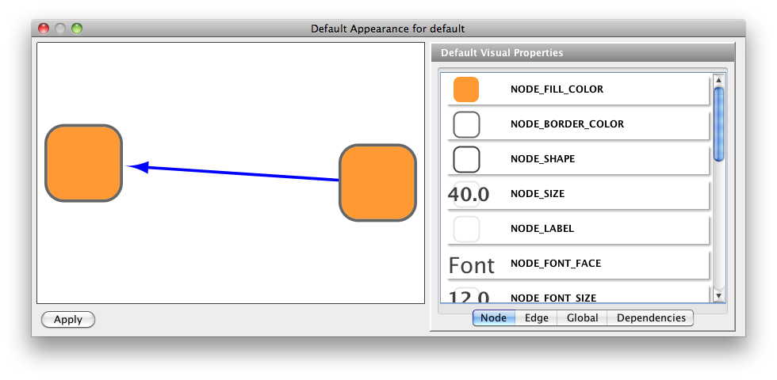
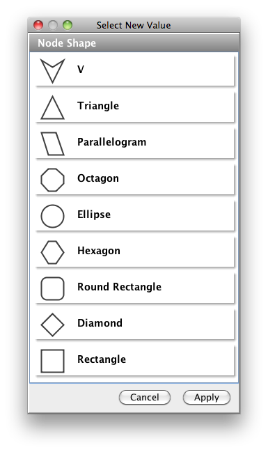
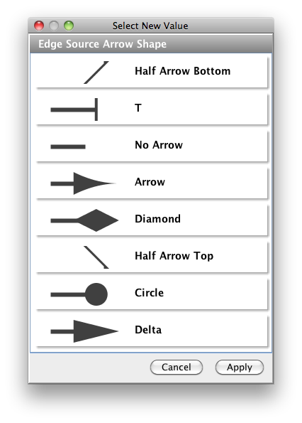
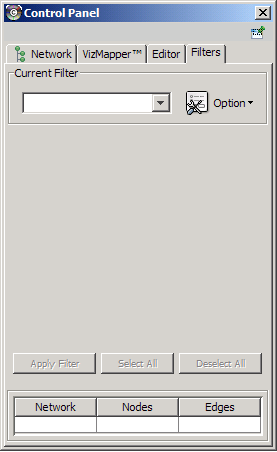

Table of Contents
- Cytoscape 2.5.1 User Manual
- Introduction
- Launching Cytoscape
- Quick Tour of Cytoscape
- Command Line Arguments
- Cytoscape Preferences
- Creating Networks
- Supported Network File Formats
- Node and Edge Attributes
- Loading Gene Expression (Attribute Matrix) Data
- Navigation and Layout
- Visual Styles
- Finding and Filtering Nodes and Edges
- Editing Networks
- Plugins and the Plugin Manager
- CytoPanels
- Rendering Engine
- Annotation
- Linkout
- Acknowledgements
- Appendix A: Old Annotation Server Format
- Appendix B: GNU Lesser General Public License
- Appendix C: Increasing memory for Cytoscape

This document is licensed under the Creative Commons license, 2006
Authors: The Cytoscape Collaboration
The Cytoscape project is an ongoing collaboration between:
Table 1.
University of California at San Diego | |
Institute for Systems Biology | |
Memorial Sloan-Kettering Cancer Center | |
Institut Pasteur | |
Agilent Technologies | |
University of California at San Francisco | |
Funding for Cytoscape is provided by a federal grant from the U.S. National Institute of General Medical Sciences (NIGMS) of the National Institutes of Health (NIH) under award number GM070743-01. Corporate funding is provided through a contract from Unilever PLC.
Cytoscape is a project dedicated to building open-source network visualization and analysis software. A software "Core" provides basic functionality to layout and query the network and to visually integrate the network with state data. The Core is extensible through a plug-in architecture, allowing rapid development of additional computational analyses and features.
Cytoscape's roots are in Systems Biology, where it is used for integrating biomolecular interaction networks with high-throughput expression data and other molecular state information. Although applicable to any system of molecular components and interactions, Cytoscape is most powerful when used in conjunction with large databases of protein-protein, protein-DNA, and genetic interactions that are increasingly available for humans and model organisms. Cytoscape allows the visual integration of the network with expression profiles, phenotypes, and other molecular state information, and links the network to databases of functional annotations.
The central organizing metaphor of Cytoscape is a network (graph), with genes, proteins, and molecules represented as nodes and interactions represented as links, i.e. edges, between nodes.
Cytoscape is a collaborative project between the Institute for Systems Biology (Leroy Hood lab), the University of California San Diego (Trey Ideker lab), Memorial Sloan-Kettering Cancer Center (Chris Sander lab), the Institut Pasteur (Benno Schwikowski lab), Agilent Technologies (Annette Adler lab) and the University of California, San Francisco (Bruce Conklin lab).
Visit http://www.cytoscape.org for more information.
Cytoscape is protected under the GNU LGPL (Lesser General Public License). The License is included as an appendix to this manual, but can also be found online: http://www.gnu.org/copyleft/lesser.txt. Cytoscape also includes a number of other open source libraries, which are detailed in theCytoscape User Manual/Acknowledgements below.
Cytoscape version 2.5 contains several new features, plus improvements to the performance and usability of the software. These include:
New VizMapper user interface (UI)
- More Intuitive UI.
- Continuous mapping editors.
- Visual editor for default view.
- Visual Mapping Mapping Browser.
- Improved visual legend generator.
- Utilities to generate discrete values.
- New Features for Visual Style
- Transparency (opacity) support.
- Continuous edge width.
- Color visual property is separated from Arrow and Edge.
- New Filter UI
- Use intuitive UI widgets for basic filters
- Suggest search values with indexing
- Have options to save in session or globally
- Layout Manager/Broker
- Plugin Manager and new plugin website
- Install/Update/Delete plugins from within Cytoscape.
- Search for version compatible plugins from any host site.
- Display list of installed plugins.
- Undo Manager
- Group API for plugin developers.
- Node stacking
- Tested on both Java SE 5 and 6.
- Many, many bug fixes!
Cytoscape is a Java application verified to run on Linux, Windows, and Mac OS X. Although not officially supported, other UNIX platforms such as Solaris or FreeBSD may run Cytoscape if Java version 5 or later is available for the platform.
The system requirements for Cytoscape depend on the size of the networks the user wants to load, view and manipulate.
Table 2.
| Small Network Visualization | Large Network Analysis/Visualization |
Processor | 1GHz | As fast as possible |
Memory | 512MB | 2GB+ |
Graphics Card | On board Video | Highend Graphics Card |
Monitor | XGA (1024X768) | Wide or Dual Monitor |
If not already installed on your computer, download and install Java SE 5 or 6. Cytoscape 2.5 will no longer run with Java version 1.4.x or lower. You must install Java SE 5 or 6!!!
These can be found at:
In general, Java SE 6 is faster than 5. If your machine is compatible with the 6 series, please try version 6.
There are a number of options for downloading and installing Cytoscape. All options can be downloaded from the http://cytoscape.org website.
- Automatic installation packages exist for Windows, Mac OS X, and Linux platforms.
- You can install Cytoscape from a compressed archive distribution.
- You can build Cytoscape from the source code.
You can check out the latest and greatest software from our Subversion repository.
Cytoscape installations (regardless of platform) containing the following files and directories:
Table 3.
File | Description |
cytoscape.jar | Main Cytoscape application (Java archive) |
cytoscape.sh | Script to run Cytoscape from command line (Linux, Mac OS X) |
cytoscape.bat | Script to run Cytoscape (Windows) |
LICENSE.txt/html | Cytoscape GNU LGPL License |
lib/ | library jar files needed to run Cytoscape. |
docs/ | Manuals in different formats. What you are reading now. |
licenses/ | Licence files for the various libraries distributed with Cytoscape. |
plugins/ | Directory containing cytoscape plugins, in .jar format. |
sampleData/ | |
| galFiltered.gml -- Sample molecular interaction network file * |
| galFiltered.sif -- Identical network in Simple Interaction Format * |
| galExpData.pvals -- Sample gene expression matrix file * |
| galFiltered.nodeAttrTable.xls -- Sample node attribute file in Microsoft Excel format |
| galFiltered.cys -- Sample session file created from datasets above plus GO Annotations * |
| BINDyeast.sif -- Network of all yeast protein-protein interactions in the BIND database as of Dec, 2006 ** |
| BINDhuman.sif -- Network of all human protein-protein interactions in the BIND database as of Dec, 2006 ** |
| yeastHighQuality.sif -- Sample molecular interaction network file *** |
| interactome_merged.networkTable.gz -- Human interactome network file in tab-delimited format **** |
* From Ideker et al., Science 292:929 (2001)
** Obtained from data hosted at http://www.blueprint.org/bind/bind_downloads.html
** From von Mering et al., Nature, 417:399 (2002) and Lee et al, Science 298:799 (2002)
**** Created from Cytoscape tutorial web page. Original data sets are available at: http://www.cytoscape.orghttp://cytoscape.org/cgi-bin/moin.cgi/Data_Sets/ from "A merged human interactome" by Andrew Garrow, Yeyejide Adeleye and Guy Warner (Unilever, Safety and Environmental Assurance Center).
Double-click on the icon created by the installer or by running cytoscape.sh from the command line (Linux or Mac OS X) or double-clicking cytoscape.bat (Windows). Alternatively, you can pass the .jar file to Java directly using the command java -Xmx512M -jar cytoscape.jar -p plugins. The -Xmx512M flag tells java to allocate more memory for Cytoscape and the -p plugins option tells cytoscape to load all of the plugins in the plugins directory. Loading the plugins is important because many key features like layouts, filters and the attribute browser are included with Cytoscape as plugins in the plugins directory. See the Command Line chapter for more detail. In Windows, it is also possible to directly double-click the .jar file to launch it. However, this does not allow specification of command-line arguments (such as the location of the plugin directory).
When you succeed in launching Cytoscape, a window will appear that looks like this (captured on Mac OS 10.4):

For users interested in loading large networks, the amount of memory needed by Cytoscape will increase. Memory usage depends on both number of network objects (nodes+edges) and the number of attributes. Here are some rough suggestions for memory allocation:
Suggested Memory Size Without View
Table 4.
Number of Objects (nodes + edges) | Suggested Memory Size |
0 - 70,000 | 512M (default) |
70,000 - 150,000 | 800M |
Suggested Memory Size With View
Table 5.
Number of Objects (nodes + edges) | Suggested Memory Size |
0 - 20,000 | 512M (default) |
20,000 - 70,000 | 800M |
70,000 - 150,000 | 1G |
To increase the maximum memory size for Cytoscape, you can specify it from command line. For example, if you want to assign 1GB of memory, type:
java -Xmx1GB -jar cytoscape.jar -p plugins
from the command line.
For more details, see How to increase memory for Cytoscape.
For the application to work properly, all files should be left in the directory in which they were unpacked. The core Cytoscape application assumes this directory structure when looking for the various libraries needed to run the application. If you are adventurous, you can get creative with the $CLASSPATH and/or the cytoscape.jar manifest file and run Cytoscape from any location you want.
When a network is loaded, Cytoscape will look something like the image below:

The main window here has several components:
- The menu bar at the top (see below for more information about each menu).
- The toolbar, which contains icons for commonly used functions. These functions are also available via the menus. Hover the mouse pointer over an icon and wait momentarily for a description to appear as a tooltip.
- The network management panel (top left panel). This contains an optional network overview pane (shown at the bottom left).
- The main network view window, which displays the network.
- The attribute browser panel (bottom panel), which displays attributes of selected nodes and edges and enables you to modify the values of attributes.
The network management and attribute browser panels are dockable tabbed panels known as CytoPanels. You can undock any of these panels by clicking on the Float Window control  in the upper-right corner of the CytoPanel.
in the upper-right corner of the CytoPanel.
If you select this control, e.g. on the attribute browser panel, you will now have two Cytoscape windows, the main window, and a new window labeled CytoPanel 2, similar to the one shown below.

Note that CytoPanel 2 now has a Dock Window control. If you select this control, the window will dock onto the main window.
Cytoscape also has an editor that enables you to build and modify networks interactively by dragging and dropping nodes and edges from a palette onto the main network view window. The Node shapes and Edge arrows on the palette are defined by the currently used Visual Style. To edit a network, just select the Editor tab on CytoPanel 1. An example of an editor, with the palette contained in CytoPanel 1 and defined by the BioMoleculeEditor Visual Style, is shown below.

The File menu contains most basic file functionality: File → Open for opening a Cytoscape session file; File → New for creating a new network, either blank for editing, or from an existing network; File → Save for saving a session file; File → Import for importing data such as networks and attributes; and File → Export for exporting data and images. Also, File → Print allows printing, while File → Quit closes all windows of Cytoscape and exits the program.

The Edit menu contains Undo and Redo functions which undo and redo edits made in the Attribute Browser, the Network Editor and to layout.
There are also options for creating and destroying views (graphical representations of a network) and networks (the raw network data – not yet visualized), as well as an option for deleting selected nodes and edges from the current network. All deleted nodes and edges can be restored to the network via Edit → Undo. Editing preferences for properties and plugins is found under Edit → Preferences → Properties... .

The View menu allows you to display or hide the network management panel (CytoPanel 1), the attribute browser (CytoPanel 2), the Network Overview (in CytoPanel 1), and the VizMapper.

The Select menu contains different options for selecting nodes and edges. It also contains the Select → Use Filters option, which allows filters to be created for automatic selection of portions of a network whose node or edge attributes meet a filtering criterion.

The Layout menu has an array of features for visually organizing the network. The features in the top portion of the network (Rotate, Scale, Align and Distribute) are tools for manipulating the network visualization. The bottom section of the menu lists a variety of layout algorithms which automatically lay a network out.

The Plugins menu contains options for managing (install/update/delete) your plugins and may have options added by plugins that have been installed, such as the Agilent Literature Search or Merge Networks. Depending on which plugins are loaded, the plugins that you see may be different than what appear here.

Table 6.
Note: A list of available Cytoscape plugins with descriptions is available online at: http://cytoscape.org/plugins2.php |

Cytoscape 2.3 and newer versions allow multiple networks to be loaded at a time, either with or without a view. A network stores all the nodes and edges that are loaded by the user and a view displays them. You can have many views of the same network. Networks (and their optionally associated views) can be organized hierarchically.
An example where a number of networks have been loaded and arranged hierarchically is shown below:

The network manager (top-right tree view in CytoPanel 1) shows the networks that are loaded. Clicking on a network here will make that view active in the main window, if the view exists (green highlighted networks only). Each network has a name and size (number of nodes and edges), which are shown in the network manager. If a network is loaded from a file, the network name is the name of the file.
Some networks are very large (thousands of nodes and edges) and can take a long time to display. For this reason, a network in Cytoscape may not contain a ‘view’. Networks that have a view are highlighted in green and networks that don’t have a view are highlighted in red. You can create or destroy a view for a network by right-clicking the network name in the network manager or by choosing the appropriate option in the Edit menu. You can also destroy previously loaded networks this way. In the picture above, seven networks are loaded, six green ones with views and one red one without a view.
Certain operations in Cytoscape will create new networks. If a new network is created from an old network, for example by selecting a set of nodes in one network and copying these nodes to a new network (via the File → New → Network option), it will be shown as a child of the network that it was derived from. In this way, the relationships between networks that are loaded in Cytoscape can be seen at a glance. Networks in the top part of the tree in the figure above were generated in this manner.
The available network views are also arranged as multiple overlapping windows in the network view window. You can maximize, minimize, and destroy network views by using the normal window controls for your operating system.
The network overview window shows an overview (or ‘bird’s eye view’) of the network. It can be used to navigate around a large network view. The blue rectangle indicates the portion of the network currently displayed in the network view window, and it can be dragged with the mouse to view other portions of the network. Zooming in will cause the rectangle to appear smaller and vice versa.

Cytoscape recognizes a number of optional command line arguments, including run-time specification of network files, attribute files, and session files. This is the output generated when the cytoscape is executed with the "-h" or "--help" flag:
usage: java -Xmx512M -jar cytoscape.jar [OPTIONS]
-h,--help Print this message.
-v,--version Print the version number.
-s,--session <file> Load a cytoscape session (.cys) file.
-N,--network <file> Load a network file (any format).
-e,--edge-attrs <file> Load an edge attributes file (edge attribute format).
-n,--node-attrs <file> Load a node attributes file (node attribute format).
-m,--matrix <file> Load a node attribute matrix file (table).
-p,--plugin <file> Load a plugin jar file, directory of jar files,
plugin class name, or plugin jar URL.
-P,--props <file> Load cytoscape properties file (Java properties
format) or individual property: -P name=value.
-V,--vizmap <file> Load vizmap properties file (Java properties format).
Any file specified for an option may be specified as either a path or as a URL. For example you can specify a network as a file (assuming that myNet.sif exists in the current working directory): cytoscape.sh -N myNet.sif. Or you can specify a network as a URL: cytoscape.sh -N http://example.com/myNet.sif.
Table 7.
Argument | Description |
-h,--help | This flag generates the help output you see above and exits. |
-v,--version | This flag prints the version number of Cytoscape and exits. |
-s,--session <file> | This option specifies a session file to be loaded. Since only one session file can be loaded at a given time, this option may only specified once on a given command line. The option expects a |
-N,--network <file> | This option is used to load all types of network files. SIF, GML, and XGMML files can all be loaded using the -N option. You can specify as many networks as desired on a single command line. |
-e,--edge-attrs <file> | This option specifies an edge attributes file. You may specify as many edge attribute files as desired on a single command line. |
-n,--node-attrs <file> | This option specifies a node attributes file. You may specify as many node attribute files as desired on a single command line. |
-m,--matrix <file> | This option specifies a data matrix file. In a biological context, the data matrix consists of expression data. All data matrix files are read into node attributes. You may specify as many data matrix files as desired on a single command line. |
-p,--plugin <file> | This option specifies a cytoscape plugin (.jar) file to be loaded by Cytoscape. This option also subsumes the previous "resource plugin option". You may specify a class name that identifies your plugin and the plugin will be loaded if the plugin is in Cytoscape's CLASSPATH. For example, assuming that the class MyPlugin can be found in the CLASSPATH, you could specify the plugin like this: |
-P,--props <file> | This option specifies Cytoscape properties. Properties can be specified either as a properties file (in Java's standard properties format), or as individual properties. To specify individual properties, you must specify the property name followed by the property value where the name and value are separated by the '=' sign. For example to specify the defaultSpeciesName: |
-V,--vizmap <file> | This option specifies a visual properties file. |
All options described above (including plugins) can be loaded from the GUI once Cytoscape is running.
Table 8.
Important! If you have used previous versions of Cytoscape, you will notice that handling of properties has changed. The most important change is that properties are no longer saved by default to the current directory or to your home |
The Cytoscape Properties editor, accessed via Edit → Preferences → Properties…, is used to specify general and default properties. Properties are now stored in Cytoscape session files, so changes to general properties will be saved as part of the current session, but will only carry over to subsequent sessions if they are set as defaults or exported using the File → Export function.
Cytoscape properties are configurable via Add, Modify and Delete operations.

Some common properties are described below.
Table 9.
Property name | Default value | Valid values |
viewThreshold | 10000 | integer > 0 |
secondaryViewThreshold | 30000 | integer > 0 |
viewType | tabbed | tabbed |
defaultWebBrowser |
| A path to the web browser on your system. This only needs to be specified if Cytoscape can’t find the web browser on your system. |
It is possible to alter the default properties for Cytoscape.
Edit the properties via Edit → Preferences → Properties... and check the Make Current Cytoscape Properties Default checkbox. This will save the current properties to the .cytoscape directory, where they will then be applied to all of your Cytoscape sessions from that point on. Otherwise, Cytoscape will automatically save the properties used in a particular session inside its .cys session file, while the default properties will be applied at the beginning of subsequent sessions.
Cytoscape contains a pre-defined list of bookmarks, which point to sample network files located on the Cytoscape web server. Users may add, modify, and delete bookmarks through the Bookmark manager, accessed by going to Edit → Preferences → Bookmarks… .

There are currently two types of bookmarks: network and annotation. Network bookmarks are URLs pointing to network files available on the Internet. These are nomal networks that can be loaded into Cytoscape. The annotation bookmarks are URLs pointing to ontology annotation files. The annotation bookmarks are only used when importing an ontology.
There are 3 different ways of creating networks in Cytoscape:
- Importing pre-existing, formatted network files.
- Importing pre-existing, unformatted text or Excel files.
- Creating an empty network and manually adding nodes and edges.
Network files can be specified in any of the formats described in the Supported Network Formats chapter. Networks are imported into Cytoscape through the "Import Network" window, which can be accessed by going to File → Import → Network (multiple file types). The network file can either be located directly on the local computer, or found on a remote computer (in which case it will be referenced with a URL).
By default, Cytoscape loads networks from the local computer.
The Import Networks dialog shows a default setting of "Data Source Type: Local," meaning that network files from the local computer will be available for importing. Choose the correct file by clicking on the Select button (only file types that Cytoscape recognizes will be shown), and then load the network by clicking on the Import button. Some sample network files of different types have been included in the sampleData folder in Cytoscape.
Network files in SIF, GML, and XGMML formats may also be loaded directly from the command line using the –N option.

The Import Networks dialog is also capable of importing network files using a URL. To do this, set the Data Source Type to Remote and insert the appropriate URL, either manually or using URL bookmarks. Bookmarked URLs can be accessed by clicking on the arrow to the right of the text field (see the Bookmark Manager in Preferences for more details on bookmarks). Also, you can drag and drop links from web browser to the URL text box. Once a URL has been specified, click on the Import button to load the network.

Importing networks from URL addresses has an important caveat. Because Cytoscape determines file type primarily (not exclusively) by file extension, it can have trouble importing networks with URLs that don't end in a human readable file name. If Cytoscape does not recognize a meaningful file name and extension in the URL, it will attempt to guess the type of file based on MIME type. If the MIME type is not recognizable to any of our import handlers, then the import will fail.
Another issue for network import is the presence of firewalls, which can affect which files are accessible to a computer. To work around this problem, Cytoscape supports the use of proxy servers. To configure the proxy server, go to Edit → Preferences→ Proxy Server... . This is further described in the Preferences chapter.
Introduced in version 2.4, Cytoscape now supports the import of networks from delimited text files and Excel workbooks using Edit → Import → Network from Table (Text/MS Excel)... . An interactive GUI allows users to specify parsing options for specified files. The screen provides a preview that shows how the file will be parsed given the current configuration. As the configuration changes, the preview updates automatically. In addition to specifying how the file will be parsed, the user must also choose the columns that represent the Source nodes, the Target nodes, and an optional edge interaction type.

The "Import Network from Table" function supports delimited text files and single-sheet Microsoft Excel Workbooks. The following is a sample table file:
source target interaction boolean attribute string attribute floating point attribute YJR022W YNR053C pp TRUE abcd12371 1.2344543 YER116C YDL013W pp TRUE abcd12372 1.2344543 YNL307C YAL038W pp FALSE abcd12373 1.2344543 YNL216W YCR012W pd TRUE abcd12374 1.2344543 YNL216W YGR254W pd TRUE abcd12375 1.2344543
The network table files should contain at least two columns: source nodes and target nodes. The interaction type is optional in this format. Therefore, a minimal network table looks like the following:
YJR022W YNR053C YER116C YDL013W YNL307C YAL038W YNL216W YCR012W YNL216W YGR254W
One row in a network table file represents an edge and its edge attributes. This means that a network file is considered a combination of network data and edge attributes. A table may contain columns that aren't meant to be edge attributes. In this case, you can choose not to import those columns by clicking on the column header in the preview window. This function is useful when importing a data table like the following (1):
Unique ID A Unique ID B Alternative ID A Alternative ID B Aliases A Aliases B Interaction detection methods First author surnames Pubmed IDs species A species B Interactor types Source database Interaction ID Interaction labels Cross-references Associated Files Experiment files Experiment labels Different techniques Different Pubmed articles Different sources Weight 7205 5747 TRIP6 PTK2 Q15654 Q05397-1 vv|HPRD Currently not available 14688263|15892868(Marcotte) Mammalia Homo sapiens protein|protein HPRD|Marcotte 0 Thyroid hormone receptor interactor 6-FAK-|PTK2-TRIP6 NA(HPRD)|NA(Marcotte) HPRD/02859_psimi.xml|other/ORIGINAL_DATA_MARCOTTE.txt vv(HPRD/02859_psimi.xml)|HPRD(other/ORIGINAL_DATA_MARCOTTE.txt) 17651(ExptRef)|Marcotte 2 2 2 2 4174 7311 MCM5 UBA52 P33992 P62987 neighbouring_reaction Currently not available 15608231(Reactome) Homo sapiens Homo sapiens protein|protein Reactome 1 P33992-P62988 Reaction:68944<->Reaction:68946(Reactome)|Reaction:68946<->Reaction:68944(Reactome) other/ORIGINAL_DATA_MARCOTTE.txt neighbouring_reaction(other/REACTOMEhomo_sapiens.interactions.txt) Reactome 1 1 1 1 7040 7040 TGFB1 TGFB1 P01137 P01137 nmr: nuclear magnetic resonance Currently not available 8679613 Homo sapiens Homo sapiens protein|protein BIND 2 TGFB1-TGFB1- 72085(BIND) BIND/bind_taxid9606.1.psi.xml nmr: nuclear magnetic resonance(BIND/bind_taxid9606.1.psi.xml) NotAvailable 1 1 1 1
This data file is a tab-delimited text and contains network data (interactions), edge attributes, and node attributes. To import network and edge attributes from this table, you need to choose Unique ID A as source, Unique ID B as target, and Interactor types as interaction type. Then you need to turn off columns used for node attributes (Alternative ID A, species B, etc.). Other columns can be imported as edge attributes.
The network import function cannot import node attributes - only edge attributes. To import node attributes from this table, please see the Attributes section of this manual.
Note (1): This data is taken from the A merged human interactome datasets by Andrew Garrow, Yeyejide Adeleye and Guy Warner (Unilever, Safety and Environmental Assurance Center, 12 October 2006). Actual data files are available at http://www.cytoscape.orghttp://cytoscape.org/cgi-bin/moin.cgi/Data_Sets/
To import network text/Excel tables, please follow these steps:
Select File → Import → Network from Table (Text/MS Excel)...
- Select a table file by clicking on the Select File button.
- Define the interaction parameters by specifying which columns of data contain the Source Interaction, Target Interaction, and Interaction Type. Setting the Interaction Type as Default Interaction will result in all interactions being given the value pp; this value can be modified in Advanced Options (below).
- (Optional) Define edge attribute columns, if applicable. Network table files can have edge attribute columns in addition to network data.
Enable/Disable Attribute Column - By left-clicking on a column header in the preview table, you can enable/disable edge attributes. If the header is checked and entries are blue, the column will be imported as an edge attribute. For example, the table below shows that columns 1 through 3 will be used as network data, column 4 will not be imported, and columns 5 and 6 will be imported as edge attributes.
Change Attribute Name and Data Types - If you right-click on a column header in the preview table, you can modify the attribute name and data type. For more detail, see "Modify Attribute Name/Type" below.
- Click the Import button.


You can select several options by checking the Show Text File Import Options checkbox.
- Delimiter: You can select multiple delimiters for text tables. By default, Tab and Space are selected as delimiters.
- Preview Options: When you select a network table file, the first 100 entries will be displayed in the Preview panel. To display more entries, change the value for this option. If you want to show all entries in the file, select "Show all entries in the file". You will need to click the Reload button to update the Preview panel.
- Attribute Names
- Transfer first line as attribute names: Selecting this option will cause all edge attribute columns to be named according to the first data entry in that column.
- Start Import Row: Set which row of the table to begin importing data from. For example, if you want to skip the first 3 rows in the file, set 4 for this option.
- Comment Line: Rows starting with this character will not be imported. This option can be used to skip comment lines in text files.
- Network Import Options: If the Interaction Type is set to Default Interaction, the value here will be used as the interaction type for all edges.

Attribute names and data types can be modified here.
- Modify Attribute Name - just enter a new attribute name and click OK.
- Modify Attribute Data Type - The following attribute data types are supported:
- String
- Boolean (True/False)
- Integer
- Floating Point
- List of (one of) String/Boolean/Integer/Floating Point
Cytoscape has a basic data type detection function that automatically suggests the attribute data type of a column according to its entries. This can be overridden by selecting the appropriate data type from the radio buttons provided. For lists, a global delimiter must be specified (i.e., all cells in the table must use the same delimiter).
A new, empty network can also be created and nodes and edges manually added. To create an empty network, go to File → New → Network → Empty Network, and then manually add network components using the Editor in CytoPanel 1 (see the Editor chapter for more details).
Cytoscape can read network/pathway files written in the following formats:
- Simple interaction file (SIF or .sif format)
- Graph Markup Language (GML or .gml format)
- XGMML (extensible graph markup and modelling language).
- SBML
- BioPAX
- PSI-MI Level 1 and 2.5
- Delimited text
- Excel Workbook (.xls)
The SIF format specifies nodes and interactions only, while other formats store additional information about network layout and allow network data exchange with a variety of other network programs and data sources. Typically, SIF files are used to import interactions when building a network for the first time, since they are easy to create in a text editor or spreadsheet. Once the interactions have been loaded and network layout has been performed, the network may be saved to GML or XGMML format for interaction with other systems. All file types listed (except Excel) are text files and you can edit and view them in a regular text editor.
The simple interaction format is convenient for building a graph from a list of interactions. It also makes it easy to combine different interaction sets into a larger network, or add new interactions to an existing data set. The main disadvantage is that this format does not include any layout information, forcing Cytoscape to re-compute a new layout of the network each time it is loaded.
Lines in the SIF file specify a source node, a relationship type (or edge type), and one or more target nodes:
nodeA <relationship type> nodeB nodeC <relationship type> nodeA nodeD <relationship type> nodeE nodeF nodeB nodeG ... nodeY <relationship type> nodeZ
A more specific example is:
node1 typeA node2 node2 typeB node3 node4 node5 node0
The first line identifies two nodes, called node1 and node2, and a single relationship between node1 and node2 of type typeA. The second line specifies three new nodes, node3, node4, and node5; here "node2" refers to the same node as in the first line. The second line also specifies three relationships, all of type typeB and with node2 as the source, with node3, node4, and node5 as the targets. This second form is simply shorthand for specifying multiple relationships of the same type with the same source node. The third line indicates how to specify a node that has no relationships with other nodes. This form is not needed for nodes that do have relationships, since the specification of the relationship implicitly identifies the nodes as well.
Duplicate entries are ignored. Multiple edges between the same nodes must have different edge types. For example, the following specifies two edges between the same pair of nodes, one of type xx and one of type yy:
node1 xx node2 node1 xx node2 node1 yy node2
Edges connecting a node to itself (self-edges) are also allowed:
node1 xx node1
Every node and edge in Cytoscape has an identifying name, most commonly used with the node and edge data attribute structures. Node names must be unique, as identically named nodes will be treated as identical nodes. The name of each node will be the name in this file by default (unless another string is mapped to display on the node using the visual mapper). This is discussed in the section on visual styles. The name of each edge will be formed from the name of the source and target nodes plus the interaction type: for example, sourceName (edgeType) targetName.
The tag <relationship type> can be any string. Whole words or concatenated words may be used to define types of relationships, e.g. geneFusion, cogInference, pullsDown, activates, degrades, inactivates, inhibits, phosphorylates, upRegulates, etc.
Some common interaction types used in the Systems Biology community are as follows:
pp .................. protein – protein interaction pd .................. protein -> DNA (e.g. transcription factor binding upstream of a regulating gene.)
Some less common interaction types used are:
pr .................. protein -> reaction rc .................. reaction -> compound cr .................. compound -> reaction gl .................. genetic lethal relationship pm .................. protein-metabolite interaction mp .................. metabolite-protein interaction
Whitespace (space or tab) is used to delimit the names in the simple interaction file format. However, in some cases spaces are desired in a node name or edge type. The standard is that, if the file contains any tab characters, then tabs are used to delimit the fields and spaces are considered part of the name. If the file contains no tabs, then any spaces are delimiters that separate names (and names cannot contain spaces).
If your network unexpectedly contains no edges and node names that look like edge names, it probably means your file contains a stray tab that's fooling the parser. On the other hand, if your network has nodes whose names are half of a full name, then you probably meant to use tabs to separate node names with spaces.
Networks in simple interactions format are often stored in files with a .sif extension, and Cytoscape recognizes this extension when browsing a directory for files of this type.
In contrast to SIF, GML is a rich graph format language supported by many other network visualization packages. The GML file format specification is available at:
http://www.infosun.fmi.uni-passau.de/Graphlet/GML/
It is generally not necessary to modify the content of a GML file directly. Once a network is built in SIF format and then laid out, the layout is preserved by saving to and loading from GML. Visual attributes specified in a GML file will result in a new visual style named Filename.style when that GML file is loaded.
XGMML is the XML evolution of GML and is based on the GML definition. In addition to network data, XGMML contains node/edge/network attributes. The XGMML file format specification is available at:
http://www.cs.rpi.edu/~puninj/XGMML/
XGMML is now preferred to GML because it offers the flexibility associated with all XML document types. If you're unsure about which to use, choose XGMML.
The Systems Biology Markup Language (SBML) is an XML format to describe biochemical networks. SBML file format specification is available at:
BioPAX is an OWL (Web Ontology Language) document designed to exchange biological pathways data. The complete set of documents for this format is available at:
The PSI-MI format is a data exchange format for protein-protein interactions. It is an XML format used to describe PPI and associated data. PSI-MI XML format specification is available at:
Cytoscape has native support for Microsoft Excel files (.xls) and delimited text files. The tables in these files can have network data and edge attributes. Users can specify columns containg source nodes, target nodes, interaction types, and edge attributes during file import. For more detail, please read the Import Free-Format Tables section section of the Creating Networks chapter.
Typically, genes are represented by nodes, and interactions (or other biological relationships) are represented by edges between nodes. For compactness, a gene also represents its corresponding protein. Nodes may also be used to represent compounds and reactions (or anything else) instead of genes.
If a network of genes or proteins is to be integrated with Gene Ontology (GO) annotation or gene expression data, the gene names must exactly match the names specified in the other data files. We strongly encourage naming genes and proteins by their systematic ORF name or standard accession number; common names may be displayed on the screen for ease of interpretation, so long as these are available to the program in the annotation directory or in a node attribute file. Cytoscape ships with all yeast ORF-to-common name mappings in a synonym table within the annotation/ directory. Other organisms will be supported in the future.
Why do we recommend using standard gene names? All of the external data formats recognized by Cytoscape provide data associated with particular names of particular objects. For example, a network of protein-protein interactions would list the names of the proteins, and the attribute and expression data would likewise be indexed by the name of the object.
The problem is in connecting data from different data sources that don't necessarily use the same name for the same object. For example, genes are commonly referred to by different names, including a formal "location on the chromosome" identifier and one or more common names that are used by ordinary researchers when talking about that gene. Additionally, database identifiers from every database where the gene is stored may be used to refer to a gene (e.g. protein accession numbers from Swiss-Prot). If one data source uses the formal name while a different data source used a common name or identifier, then Cytoscape must figure out that these two different names really refer to the same biological entity.
Cytoscape has two strategies for dealing with this naming issue, one simple and one more complex. The simple strategy is to assume that every data source uses the same set of names for every object. If this is the case, then Cytoscape can easily connect all of the different data sources.
To handle data sources with different sets of names, as is usually the case when manually integrating gene information from different sources, Cytoscape needs a data server that provides synonym information (see the chapter on Annotation). A synonym table gives a canonical name for each object in a given organism and one or more recognized synonyms for that object. Note that the synonym table itself defines which set of names are the "canonical" names. For example, in budding yeast, the ORF names are commonly used as the canonical names.
If a synonym server is available, then by default Cytoscape will convert every name that appears in a data file to the associated canonical name. Unrecognized names will not be changed. This conversion of names to a common set allows Cytoscape to connect the genes present in different data sources, even if they have different names – as long as those names are recognized by the synonym server.
For this to work, Cytoscape must also be provided with the species to which the objects belong, since the data server requires the species in order to uniquely identify the object referred to by a particular name. This is usually done in Cytoscape by specifying the species name on the command line with the –P option (cytoscape.sh -P "defaultSpeciesName=Saccharomyces cerevisiae") or by editing the properties (under Edit → Preferences → Properties...).
The automatic canonicalization of names can be turned off using the -P option (cytoscape.sh -P canonicalizeName=false") or by editing the properties (under Edit → Preferences → Properties...). This canonicalization of names currently does not apply to expression data. Expression data should use the same names as the other data sources or use the canonical names as defined by the synonym table.
Interaction networks are useful as stand-alone models. However, they are most powerful for answering scientific questions when integrated with additional information. Cytoscape allows the user to add arbitrary node, edge and network information to Cytoscape as node/edge/network attributes. This could include, for example, annotation data on a gene or confidence values in a protein-protein interaction. These attributes can then be visualized in a user-defined way by setting up a mapping from data attributes to visual attributes (colors, shapes, and so on). The section on visual styles discusses this in greater detail.
Node and edge attribute files are simply formatted: a node attribute file begins with the name of the attribute on the first line (note that it cannot contain spaces). Each following line contains the name of the node, followed by an equals sign and the value of that attribute. Numbers and text strings are the most common attribute types. All values for a given attribute must have the same type. For example:
FunctionalCategory YAL001C = metabolism YAR002W = apoptosis YBL007C = ribosome
An edge attribute file has much the same structure, except that the name of the edge is the source node name, followed by the interaction type in parentheses, followed by the target node name. Directionality counts, so switching the source and target will refer to a different (or perhaps non-existent) edge. The following is an example edge attributes file:
InteractionStrength YAL001C (pp) YBR043W = 0.82 YMR022W (pd) YDL112C = 0.441 YDL112C (pd) YMR022W = 0.9013
Since Cytoscape treats edge attributes as directional, the second and third edge attribute values refer to two different edges (source and target are reversed, though the nodes involved are the same).
Each attribute is stored in a separate file. Node and edge attribute files use the same format. Node attribute file names often use the suffix ".noa", while edge attribute file names use the suffix ".eda". Cytoscape recognizes these suffixes when browsing for attribute files.
Node and edge attributes may be loaded at the command line using the –n and –e options or via the File → Import menu.
When expression data is loaded using an expression matrix, it is automatically loaded as node attribute data unless explicitly specified otherwise.
Node and edge attributes are attached to nodes and edges, and so are independent of networks. Attributes for a given node or edge will be applied to all copies of that node or edge in all loaded network files, regardless of whether the attribute file or network file is imported first.
Note: In order to import network attributes in Cytoscape 2.4, please go to File → Import → Attribute from Table (text/MS Excel)... or encode them in an XGMML network file (see Supported File Formats for more details).
Every attribute file has one header line that gives the name of the attribute, and optionally some additional meta-information about that attribute. The format is as follows:
attributeName (class=formal.class.of.value)
The first field is always the attribute name: it cannot contain spaces. If present, the class field defines the formal (package qualified) name of the class of the attribute values. For example, java.lang.String for Strings, java.lang.Double for floating point values, java.lang.Integer for integer values, etc. If the value is actually a list of values, the class should be the type of the objects in the list. If no class is specified in the header line, Cytoscape will attempt to guess the type from the first value. If the first value contains numbers in a floating point format, Cytoscape will assume java.lang.Double; if the first value contains only numbers with no decimal point, Cytoscape will assume java.lang.Integer; otherwise Cytoscape will assume java.lang.String. Note that the first value can lead Cytoscape astray: for example,
floatingPointAttribute firstName = 1 secondName = 2.5
In this case, the first value will make Cytoscape think the values should be integers, when in fact they should be floating point numbers. It's safest to explicitly specify the value type to prevent confusion. A better format would be:
floatingPointAttribute (class=Double) firstName = 1 secondName = 2.5
or
floatingPointAttribute firstName = 1.0 secondName = 2.5
Every line past the first line identifies the name of an object (a node in a node attribute file or an edge in a edge attribute file) along with the String representation of the attribute value. The delimiter is always an equals sign; whitespace (spaces and/or tabs) before and after the equals sign is ignored. This means that your names and values can contain whitespace, but object names cannot contain an equals sign and no guarantees are made concerning leading or trailing whitespace. Object names must be the Node ID or Edge ID as seen in the left-most column of the attribute browser if the attribute is to map to anything. These names must be reproduced exactly, including case, or they will not match.
Edge names are all of the form:
sourceName (edgeType) targetName
Specifically, that is
Note that tabs are not allowed in edge names. Tabs can be used to separate the edge name from the "=" delimiter, but not within the edge name itself. Also note that this format is different from the specification of interactions in the SIF file format. To be explicit: a SIF entry for the previous interaction would look like
sourceName edgeType targetName
or
To specify lists of values, use the following syntax:
listAttributeName (class=java.lang.String) firstObjectName = (firstValue::secondValue::thirdValue) secondObjectName = (onlyOneValue)
This example shows an attribute whose value is defined as a list of text strings. The first object has three strings, and thus three elements in its list, while the second object has a list with only one element. In the case of a list every attribute value uses list syntax (i.e. parentheses), and each element is of the same class. Again, the class will be inferred if it is not specified in the header line. Lists are not supported by the visual mapper and so can’t be mapped to visual attributes.
As of Cytoscape 2.4, importing delimited text and MS Excel attribute data tables is now supported. Using this functionality, users can now easily import data that isn't formatted into Cytoscape node or edge attribute file formats (as described above).

Sample Attribute Table 1
Table 12.
Object Key | Alias | SGD ID |
AAC3 | YBR085W|ANC3 | S000000289 |
AAT2 | YLR027C|ASP5 | S000004017 |
BIK1 | YCL029C|ARM5|PAC14 | S000000534 |
The attribute table file should contain a primary key column and at least one attribute column. The maximum number of attribute columns is unlimited. The Alias column is an optional feature, as is using the first row of data as attribute names. Alternatively, you can specify each attribute name from the File → Import → Attribute from Table (text/MS Excel)... user interface.
The user interface of the "Import Attributes from Table" window is similar to that of the "Import Network from Table" window.
Select File → Import → Attribute from Table (text/MS Excel)...
- Select one of the attribute types from the Attributes radio buttons. Cytoscape can import node, edge, and network attributes.
- Select a data file. To load a local file, click on the Select File button and choose a data file. This can be either a text or Excel (.xls) file. To load a remote file, type the source URL directly into the text box. To show a preview of the remote file, click the Reload button on the Show Text File Import Options panel.
- (Optional) If the table is not properly delimited in the preview panel, change the delimiter in the Text File Import Options panel. The default delimiter is the tab. This step is not necessary for Excel Workbooks.
- By default, the first column is designated as the primary key. Change the key column if necessary.
- Click the Import button.

Formerly, Cytoscape only supported mapping between node/edge IDs and the primary keys in attribute files. With the introduction of Cytoscape 2.4, this limitation has been removed, and now both IDs and attributes with primitive data types (string, boolean, floating point, and integer) can be selected as the Key Attribute using the dropdown list provided. Complex attributes such as lists are not supported.

Cytoscape uses a simple mechanism to manage aliases of objects. Both nodes and edges can have aliases. If an attribute is loaded as an alias, it is treated as a special attribute called "alias". This will be used when mapping attributes. If the primary key and key attribute for an object do not match, Cytoscape will search for a match between aliases and the key attribute. To define an alias column in the attribute table, just click on the checkboxes to the left of the column name while importing.

For more detail on these options, please see the "Import Free-Format Table Files" section of the user manual in the Creating Networks chapter.

When Cytoscape is started, the Attribute Browser appears in the bottom CytoPanel. This browser can be hidden and restored using the F5 key or the View → Show/Hide attribute browser menu option. Like other CytoPanels, the browser can be undocked by pressing the little icon in the browser’s top right corner.
To swap between displaying node, edge, and network attributes use the tabs on the bottom of the panel labelled "Node Attribute Browser", "Edge Attribute Browser", and "Network Attribute Browser". The attribute browser displays attributes belonging to selected nodes and/or edges and the currently selected network. To populate the browser with rows (as pictured above), simply select nodes and/or edges in a loaded network. By default, only the ID of nodes and edges is shown. To display more than just the ID, click the Select Attributes  button and choose the attributes that are to be displayed (select various attributes by clicking on them, and then click elsewhere on the screen to close the attribute list). Each attribute chosen will result in one column in the attribute browser. Most attribute values can be edited by double-clicking an attribute cell; list values cannot be edited, and neither can the ID. Attribute rows in the browser can be sorted alphabetically by specific attribute by clicking on a column heading. A new attribute can be created using the Create New Attribute
button and choose the attributes that are to be displayed (select various attributes by clicking on them, and then click elsewhere on the screen to close the attribute list). Each attribute chosen will result in one column in the attribute browser. Most attribute values can be edited by double-clicking an attribute cell; list values cannot be edited, and neither can the ID. Attribute rows in the browser can be sorted alphabetically by specific attribute by clicking on a column heading. A new attribute can be created using the Create New Attribute  button, and must be one of four types – integer, string, real number (floating point), or boolean. Attributes can be deleted using the Delete Attributes
button, and must be one of four types – integer, string, real number (floating point), or boolean. Attributes can be deleted using the Delete Attributes  button. NOTE: Deleting attributes removes them from Cytoscape, not just the attribute browser! To remove attributes from the browser without deleting them, simply unselect the attribute using the Select Attributes
button. NOTE: Deleting attributes removes them from Cytoscape, not just the attribute browser! To remove attributes from the browser without deleting them, simply unselect the attribute using the Select Attributes  button.
button.
The right-click menu on the Attribute Browser has several functions, such as exporting attribute information to spreadsheet applications. For example, use the right-click menu to Select All and then Copy the data, and then paste it into a spreadsheet application. Each attribute browser panel also has a button for importing new attributes:  .
.
The Node Attribute Browser panel has additional buttons for loading Gene Expression attribute matrices (  ) as node attributes.
) as node attributes.
In addition to normal node and edge attribute data, Cytoscape also supports importing gene expression data. Gene expression data are imported using a different file format than normal attributes; however, the resulting attributes are not treated differently by Cytoscape. Gene expression data (like attribute data) can be loaded at any time, but are (generally) only relevant once a network has been loaded.
Gene expression ratios or values are specified over one or more experiments using a text file. Ratios result from a comparison of two expression measurements (experiment vs. control). Some expression platforms, such as Affymetrix, directly measure expression values, without a comparison. The file consists of a header and a number of space- or tab-delimited fields, one line per gene, with the following format:
Identifier [CommonName] value1 value2 ... valueN [pval1 pval2 ... pvalN]
Brackets [ ] indicate fields that are optional.
The first field identifies which Cytoscape node the data refers to. In the simplest case, this is the gene name - exactly as it appears on the network generated by Cytoscape (case sensitive!). Alternatively, this can be some node attribute that identifies the node uniquely, such as a probeset identifier for commercial microarrays.
The next field is an optional common name. It is not used by Cytoscape, and is provided strictly for the user's convenience. With this common name field, the input format is the same as for commonly-used expression data anaysis packages such as SAM (http://www-stat.stanford.edu/~tibs/SAM/).
The next set of columns represent expression values, one per experiment. These can be either absolute expression values or fold change ratios. Each experiment is identified by its experiment name, given in the first line.
Optionally, significance measures such as P values may be provided. These values, generated by many microarray data analysis packages, indicate where the level of gene expression or the fold change appears to be greater than random chance. If you are using significance measures, then your expression file should contain them in a second set of columns after the expression values. The column names for the expression significance measures need to match those of the expression values exactly.
For example, here is an excerpt from the file galExpData.pvals in the Cytoscape sampleData directory:
GENE COMMON gal1RG gal4RG gal80R gal1RG gal4RG gal80R YHR051W COX6 -0.034 0.111 -0.304 3.75720e-01 1.56240e-02 7.91340e-06 YHR124W NDT80 -0.090 0.007 -0.348 2.71460e-01 9.64330e-01 3.44760e-01 YKL181W PRS1 -0.167 -0.233 0.112 6.27120e-03 7.89400e-04 1.44060e-01 YGR072W UPF3 0.245 -0.471 0.787 4.10450e-04 7.51780e-04 1.37130e-05
This indicates that there is data for three experiments: gal1RG, gal4RG, and gal80R. These names appear two times in the header line: the first time gives the expression values, and the second gives the significance measures. For instance, the second line tells us that in Experiment gal1RG, the gene YHR051W has an expression value of -0.034 with significance measure 3.75720e-01.
Some variations on this basic format are recognized; see the formal file format specification below for more information. Expression data files commonly have the file extensions ".mrna" or ".pvals", and these file extensions are recognized by Cytoscape when browsing for data files.
Load an expression attribute matrix file using File → Import → Attribute/Expression Matrix... to bring up the import window, or by specifying the filename using the -m option at the command line. If you use the command line input, you must enter your expression data by node ID. If you use the dialog box, then you can either load expression data by node ID (the default option), or you can select a node attribute to use in assigning your expression data to your Cytoscape nodes. If you do use a node attribute, then (1) the attribute should already be loaded, and (2) the node attribute value must match the first column in your matrix file.
For the sample network file sampleData/galFiltered.sif:
Option A.
Load a sample gene expression data set by going to File → Import → Attribute/Expression Matrix... . In the resulting window, in the field labeled "Please select an attribute or expression matrix file...", use the Select button to enter sampleData/galExpData.pvals. The identifiers used in this file are the same ones used in the network file sampleData/galFiltered.sif, so you do not need to touch the field labeled "Assign values to nodes using...". A few lines of this file are shown below:
GENE COMMON gal1RG gal4RG gal80R gal1RG gal4RG gal80R YHR051W COX6 -0.034 0.111 -0.304 3.75720e-01 1.56240e-02 7.91340e-06 YHR124W NDT80 -0.090 0.007 -0.348 2.71460e-01 9.64330e-01 3.44760e-01 YKL181W PRS1 -0.167 -0.233 0.112 6.27120e-03 7.89400e-04 1.44060e-01
Option B.
Step 1. After loading the network, load the node attribute file sampleData/gal.probeset.na, using File → Import → Node attributes... . This file is shown in part below:
Probeset YHR051W = probeset2 YHR124W = probeset3 YKL181W = probeset4
Step 2. After loading the node attribute file, select the expression data file sampleData.galExpPvals.probeset.pvals, shown in part below:
GENE COMMON gal1RG gal4RG gal80R gal1RG gal4RG gal80R probeset2 COX6 -0.034 0.111 -0.304 3.75720e-01 1.56240e-02 7.91340e-06 probeset3 NDT80 -0.090 0.007 -0.348 2.71460e-01 9.64330e-01 3.44760e-01 probeset4 PRS1 -0.167 -0.233 0.112 6.27120e-03 7.89400e-04 1.44060e-01
After selecting this file, in the field labeled "Assign values to nodes using...", select Probeset. You will see that this loads exactly the same expression data as in Case 1, but provides extra flexibility in case the node name cannot be used as an identifier.
In all expression data files, any whitespace (spaces and/or tabs) is considered a delimiter between adjacent fields. Every line of text is either the header line or contains all the measurements for a particular gene. No name conversion is applied to expression data files.
The names given in the first column of the expression data file should match exactly the names used elsewhere (i.e. in SIF or GML files).
The first line is a header line with one of the following three header formats:
<text> <text> cond1 cond2 ... cond1 cond2 ... [NumSigConds] <text> <text> cond1 cond2 ... <tab><tab>RATIOS<tab><tab>...LAMBDAS
The first format specifies that both expression ratios and significance values are included in the file. The first two text tokens (in angled brackets) contain names for each gene, such as the formal and common gene names. The condX token set specifies the names of the experimental conditions; these columns will contain ratio values. This list of condition names must then be duplicated exactly, each spelled the same way and in the same order. Optionally, a final column with the title NumSigConds may be present. If present, this column will contain integer values indicating the number of conditions in which each gene had a statistically significant change according to some threshold.
The second format is similar to the first except that the duplicate column names are omitted, and there is no NumSigConds field. This format specifies data with ratios but no significance values.
The third format specifies an MTX header, which is a commonly used format. Two tab characters precede the RATIOS token. This token is followed by a number of tabs equal to the number of conditions, followed by the LAMBDAS token. This format specifies both ratios and significance values.
Each line after the first is a data line with the following format:
FormalGeneName CommonGeneName ratio1 ratio2 ... [lambda1 lambda2 ...] [numSigConds]
The first two tokens are gene names. The names in the first column are the keys used for node name lookup; these names should be the same as the names used elsewhere in Cytoscape (i.e. in the SIF, GML, or XGMML files). Traditionally in the gene expression microarray community, who defined these file formats, the first token is expected to be the formal name of the gene (in systems where there is a formal naming scheme for genes), while the second is expected to be a synonym for the gene commonly used by biologists, although Cytoscape does not make use of the common name column. The next columns contain floating point values for the ratios, followed by columns with the significance values if specified by the header line. The final column, if specified by the header line, should contain an integer giving the number of significant conditions for that gene. Missing values are not allowed and will confuse the parser. For example, using two consecutive tabs to indicate a missing value will not work; the parser will regard both tabs as a single delimiter and be unable to parse the line correctly.
Optionally, the last line of the file may be a special footer line with the following format:
NumSigGenes int1 int2 ...
This line specified the number of genes that were significantly differentially expressed in each condition. The first text token must be spelled exactly as shown; the rest of the line should contain one integer value for each experimental condition.
Cytoscape uses a Zoomable User Interface for navigating and viewing networks. ZUIs use two mechanisms for navigation: zooming and panning. Zooming increases or decreases the magnification of a view based on how much or how little a user wants to see. Panning allows users to move the focus of a screen to different parts of a view.
Cytoscape provides two mechanisms for zooming: either using mouse gestures or buttons on the toolbar. Use the zooming buttons located on the toolbar to zoom in and out of the interaction network shown in the current network display. Zoom icons are detailed below:

From Left to Right:
- Zoom Out
- Zoom In
- Zoom Selected Region
- Zoom Out to Display all of Current Network
You can also zoom in/out by holding down the right mouse button and moving the mouse to the right (zoom in) or left (zoom out).
Click the left mouse button on a node or edge to select that object. You can hold down the Shift key to select more than one node/edge or you can hold down the left mouse button and drag the mouse to select groups of nodes/edges.
The Layout menu has an array of features for organizing the network visually according to one of several algorithms, aligning and rotating groups of nodes, and adjusting the size of the network. Most of these features are available from plugins that are packaged with Cytoscape 2.3 and above. Some of the layout algorithms provided are:
The spring-embedded layout is based on a “force-directed” paradigm. Network nodes are treated like physical objects that repel each other, such as electrons. The connections between nodes are treated like metal springs attached to the pair of nodes. These springs repel or attract their end points according to a force function. The layout algorithm sets the positions of the nodes in a way that minimizes the sum of forces in the network. This algorithm can be applied to the entire network or a portion of it by selecting the appropriate options from Layout → Cytoscape Layouts → Spring Embedded. A sample screen shot is provided below:

This algorithm produces layouts that emphasize group and tree structures within a network. It partitions the network by analyzing its connectivity structure, and arranges the partitions as separate circles. The circles themselves are arranged in a radial tree layout fashion. This algorithm is available by selecting Layout → yFiles → Circular.

The hierarchical layout algorithm is good for representing main direction or "flow" within a network. Nodes are placed in hierarchically arranged layers and the ordering of the nodes within each layer is chosen in such a way that minimizes the number of edge crossings. This algorithm is available by selecting Layout → yFiles → Hierarchical.

The organic layout algorithm is a kind of spring-embedded algorithm that combines elements of the other algorithms to show the clustered structure of a graph. This algorithm is available by selecting Layout → yFiles → Organic.

Several other alignment algorithms, including a selection from the JGraph project (http://jgraph.sourceforge.net), are also available under the Layout menu.
Many layouts have adjustable parameters that are exposed through the Layouts → Settings... menu option. This will pop up the following dialog, which allows you to choose which layout algorithm settings to adjust. The settings presented vary by algorithm and only those algorithms that allow access to their parameters will appear in the drop-down menu at the top of the dialog. Once you've modified a parameter, clicking the "Execute Layout" button will apply the layout. This be repeated until a useful layout is achieved. Settings can be saved using the "Save Settings" button.

The simplest method to manually organize a network is to click on a node and drag it. If you select multiple nodes, all of the selected nodes will be moved together.

Selecting the Layout → Rotate option will open the Rotate window in CytoPanel 5. This function will either rotate the entire network or a selected portion of the network. The image below shows a network with selected nodes rotated.
Before

After


Selecting the Layout → Scale option will open the Scale window in CytoPanel 5. This function will scale the position of the entire network or of the selected portion of the network. Note that only the position of the nodes will be scaled, not the node sizes. Node size can be adjusted using the VizMapper. The image below shows selected nodes scaled.
Before

After


Selecting the Layout → Align/Distribute option will open the Align/Distribute/Stack window in CytoPanel 5. The Align buttons provide different options for either vertically or horizontally aligning selected nodes against a line. The differences are in what part of the node gets aligned, e.g. the center of the node, the top of the node, the left side of the node. The Distribute buttons evenly distribute selected nodes between the two most distant nodes along either the vertical or horizontal axis. The differences are again a function what part of the node is used as a reference point for the distribution. And the Stack buttons vertically or horizontally stack selected nodes with the full complement of alignment options. The table below provides a decription of what each button does.
Table 13.
Button | Before | After | Description of Align Options |
|
|
| Vertical Align Top - The tops of the selected nodes are aligned with the top-most node. |
|
|
| Vertical Align Center - The centers of the selected nodes are aligned along a line defined by the midpoint between the top and bottom-most nodes. |
|
|
| Vertical Align Bottom - The bottoms of the selected nodes are aligned with the bottom-most node. |
|
|
| Horizontal Align Left - The left hand sides of the selected nodes are aligned with the left-most node. |
|
|
| Horizontal Align Center - The centers of the selected nodes are aligned along a line defined by the midpoint between the left and right-most nodes. |
|
|
| Horizontal Align Right - The right hand sides of the selected nodes are aligned with the right-most node. |


Table 14.
Button | Before | After | Description of Distribute Options |
|
|
| Vertical Distribute Top - The tops of the selected nodes are distributed evenly between the top-most and bottom-most nodes, which should stay stationary. |
|
|
| Vertical Distribute Center - The centers of the selected nodes are distributed evenly between the top-most and bottom-most nodes, which should stay stationary. |
|
|
| Vertical Distribute Bottom - The bottoms of the selected nodes are distributed evenly between the top-most and bottom-most nodes, which should stay stationary. |
|
|
| Horizontal Distribute Left - The left hand sides of the selected nodes are distributed evenly between the left-most and right-most nodes, which should stay stationary. |
|
|
| Horizontal Distribute Center - The centers of the selected nodes are distributed evenly between the left-most and right-most nodes, which should stay stationary. |
|
|
| Horizontal Distribute Right - The right hand sides of the selected nodes are distributed evenly between the left-most and right-most nodes, which should stay stationary. |


Table 15.
Button | Before | After | Description of Stack Options |
|
|
| Vertical Stack Left - Vertically stacked below top-most node with the left-hand sides of the selected nodes aligned. |
|
|
| Vertical Stack Center - Vertically stacked below top-most node with the centers of selected nodes aligned. |
|
|
| Vertical Stack Right - Vertically stacked below top-most node with the right-hand sides of the selected nodes aligned. |
|
|
| Horizontal Stack Top - Horizontally stacked to the right of the left-most node with the tops of the selected nodes aligned. |
|
|
| Horizontal Stack Center - Horizontally stacked to the right of the left-most node with the centers of selected nodes aligned. |
|
|
| Horizontal Stack Bottom - Horizontal Stack Center - Horizontally stacked to the right of the left-most node with the bottoms of the selected nodes aligned. |


This is a little-known feature! If you select an edge and then Ctrl-left-click on the edge, an edge "handle" will appear. This handle can be used to change the shape of the line. To remove a handle, simply Ctrl-left-click on the handle again.


Two other options under Select → Edges provide further control: "Smooth Selected Edges" turns an edge consisting of line segments into a smoothed bezier curve, and "Straighten Selected Edges" turns a curved edge back into line segments.

In addition to the ability to click on a node and drag it to a new position, Cytoscape now has the ability to move nodes using the arrow keys on the keyboard. By selecting one or more nodes using the mouse and clicking one of the arrow keys (←, →, ↑, ↓) the selected nodes will move one pixel in the chosen direction. If an arrow key is pressed while holding the Shift key down, the selected nodes will 10 pixels in the chosen direction.
Mouse movement has also been enhanced. If the Shift key is held down while dragging a node, the node will only move horizontally, vertically, or along a 45 degree diagonal.
One of Cytoscape's strengths in network visualization is the ability to allow users to encode any attribute of their data (name, type, degree, weight, expression data, etc.) as a visual property (such as color, size, transparency, or font type). A set of these encoded or mapped attributes is called a Visual Style and can be created or edited using the Cytoscape VizMapper. With the VizMapper, the visual appearance of your network is easily customized. For example, you can:
- Specify a default color and shape for all nodes.
- Use specific line types to indicate different types of interactions.
- Encode specific physical entities as different node shapes.
- Set node sizes based on the degree of connectivity of the nodes. You can visually see the hub of a network...
- ...or, set the font size of the node labels instead.
- Set node widths and heights based on label size.
- Visualize gene expression data along a color gradient.
- Control edge transparency (opacity) using edge weights.
- Browse extremely-dense networks by controlling the opacity of nodes.


The VizMapper can be accessed by going to View → Open VizMapper or by clicking on the VizMapper icon  . Also, starting in Cytoscape 2.5, direct access to the VizMapper is provided via a tab on the Control Panel at the left-hand side of the screen (formerly known as CytoPanel 1).
. Also, starting in Cytoscape 2.5, direct access to the VizMapper is provided via a tab on the Control Panel at the left-hand side of the screen (formerly known as CytoPanel 1).
As of Cytoscape 2.5, the VizMapper has undergone a complete interface redesign. There are three types of components in the new VizMapper:
- Main Panel

- This panel allows you to create/delete/view/switch between different visual styles using the Current Visual Style options. The Visual Mapping Browser at the bottom displays the mapping details for a given visual style and is used to edit these details as well.
- Default Appearance Editor

- Clicking on the section labelled "Defaults" on the Main Panel will bring up this editor, which allows users to visually edit the default appearance of nodes and edges for the selected visual style.
- Continuous Editors
- These are editors for continuous mapping, which is a mapping from numerical value to visual attributes. They are accessed through the Visual Mapping Browser on the Main Panel. Using these windows, users can edit continuous mapping more intuitively.
- Color Gradient Editor
- Continuous-to-Discrete Editor
- Continuous-to-Continuous Editor
These editors will be discussed in further detail below.
The Cytoscape distribution includes several predefined visual styles to get you started. To demonstrate these styles, try out the following example:
Step 1. Load some sample data
Load a sample network: From the main menu, select File → Import → Network (Multiple file types), and select
sampleData/galFiltered.sif.Layout the network: select Layout → yFiles → Organic.
Load a sample set of expression data: From the main menu, select File → Import → Attribute /Expression Matrix and select
sampleData/galExpData.pvals.
By default, the Visual Style labeled “default” will be automatically applied to your network. This default style has a purple background, circular pink nodes, and blue edges (see sample screenshot below).

Step 2. Switch between different Visual Styles
You can change visual styles by making a selection from the Current Visual Style dropdown list (found at the top of the VizMapper Main Panel).
For example, if you select “Sample1”, a new visual style will be applied to your network, and you will see a white background and round blue nodes. Additionally, if you zoom in closer, you can see that protein-DNA interactions (specified with the label "pd") are drawn with dashed red edges, whereas protein-protein interactions (specified with the label "pp") are drawn with a solid light blue edge (see sample screenshot below).

Finally, if you select “Sample2”, gene expression values for each node will be colored along a color gradient between red and green (where red represents a low expression ratio and green represents a high expression ratio, using thresholds set for the gal1RGexp experiment bundled with Cytoscape in the sampleData/galExpData.pvals file). See the sample screenshot below:

The Cytoscape VizMapper uses three core concepts:
A visual attribute is any visual setting that can be applied to your network. For example, you can change all nodes from circles to squares by changing the node shape visual attribute.
A network attribute is any data attribute associated with a node or an edge. For example, each edge in a network may be associated with a label, such as “pd” (protein-DNA interactions), or “pp” (protein-protein interactions).
A visual mapper maps network attributes to visual attributes. For example, a visual mapper can map all protein-DNA interactions to the color blue, and all protein-protein interactions to the color red.
Cytoscape allows a wide variety of visual attributes to be controlled. These are summarized in the tables below.
Table 17.
Visual Attributes Associated with Nodes |
Node Color |
Node Opacity |
Node Border Color |
Node Border Opacity |
Node Border Line Style. Solid and dashed lines are supported. |
Node Border Line Width |
Node Shape. The following options are available: |
 |
Node Size: the width and height of each node. |
Node Label: the text label for each node. |
Node Label Color |
Node Label Opacity |
Node Label Position: the position of the label relative to the node. |
Node Font: node label font and size. |
Table 18.
Visual Attributes Associated with Edges |
Edge Color |
Edge Opacity |
Edge Line Style. Solid or dashed lines are supported. |
Edge Line Width |
Edge Source and Target Arrow Shape: The following options are available: |
 |
Edge Source and Target Arrow Color |
Edge Source and Target Arrow Opacity |
Edge Label: the text label for each edge. |
Edge Label Color |
Edge Label Opacity |
Edge Font: edge label font and size. |
For each visual attribute, you can specify a default value or define a dynamic visual mapping. Cytoscape currently supports three different types of visual mappers:
Passthrough Mapper
- The values of network attributes are passed directly through to visual attributes. A passthrough mapper is only used to specify node/edge labels. For example, a passthrough mapper can label all nodes with their common gene names.
Discrete Mapper
- Discrete network attributes are mapped to discrete visual attributes. For example, a discrete mapper can map all protein-protein interactions to the color blue.
Continuous Mapper
- Continuous graph attributes are mapped to visual attributes. Depending on the visual attribute, there are three kinds of continuous mappers:
Continuous-to-Continuous Mapper: for example, you can map a continuous numerical value to a node size.
Color Gradient Mapper: This is a special case of continuous-to-continuous mapping. Continuous numerical values are mapped to a color gradient.
Continuous-to-Discrete Mapper: for example, all values below 0 are mapped to square nodes, and all values above 0 are mapped to circular nodes.
- However, note that there is no way to smoothly morph between circular nodes and square nodes.
- Continuous graph attributes are mapped to visual attributes. Depending on the visual attribute, there are three kinds of continuous mappers:
The table below shows visual mapper support for each visual property.
Legend
Table 20.
Symbol | Description |
- | Mapping is not supported for the specified visual property. |
X | Mapping is fully supported for the specified visual property. |
o | Mapping is partially supported for the specified visual property. Support for “continuous to continuous” mapping is not supported. |
Node Visual Mappings
Table 21.
Node Visual Properties | Passthrough Mapper | Discrete Mapper | Continuous Mapper | |
Color | Node Color | - | X | X |
Node Opacity | - | X | X | |
Node Border Color | - | X | X | |
Node Border Opacity | - | X | X | |
Node Label Color | - | X | X | |
Node Label Opacity | - | X | X | |
Numeric | Node Size | - | X | X |
Node Font Size | - | X | X | |
Node Line Width | - | X | X | |
Other | Node Border Type | - | X | o |
Node Shape | - | X | o | |
Node Label | X | X | o | |
Node Tooltip | X | X | o | |
Node Font Family | - | X | o |
Edge Visual Mappings
Table 22.
Edge Properties | Passthrough Mapper | Discrete Mapper | Continuous Mapper | |
Color | Edge Color | - | X | X |
Edge Opacity | - | X | X | |
Edge Target Arrow Color | - | X | X | |
Edge Source Arrow Color | - | X | X | |
Edge Target Arrow Opacity | - | X | X | |
Edge Source Arrow Opacity | - | X | X | |
Edge Label Color | - | X | X | |
Edge Label Opacity | - | X | X | |
Numeric | Edge Line Width | - | X | X |
Edge Font Size | - | X | X | |
Other | Edge Line Type | - | X | o |
Edge Source Arrow Shape | - | X | o | |
Edge Target Arrow Shape | - | X | o | |
Edge Label | X | X | o | |
Edge Tooltip | X | X | o | |
Edge Font Family | - | X | o |
The following tutorials demonstrate some of the basic VizMapper features. Each tutorial is independent of the others.
The goal of this tutorial is to learn how to create a new Visual Style and set some default values.
Step 1. Load a sample network. From the main menu, select File → Import → Network (Multiple file types), and select sampleData/galFiltered.sif.
Step 2. Open the VizMapper. Select the View → Open VizMapper menu option, or select the VizMapper icon in the main button bar, or click on the VizMapper tab in the Control Panel at the left of the screen. You will now see a VizMapper Main Panel, as shown below.

Step 3. Create a new visual style. Click the Options  button, and select Create new visual style... Then enter a name for your new visual style when prompted. You will see an empty visual style in the VizMapper Main Panel, as shown below.
button, and select Create new visual style... Then enter a name for your new visual style when prompted. You will see an empty visual style in the VizMapper Main Panel, as shown below.

Since no mapping is set up yet, all visual attributes are listed in the Unused Properties category. From this panel, you can create node/edge mappings for all visual properties.
Step 4. Edit default values. Open the Default Appearance Editor by clicking on the Defaults graphics window (shown below) in the VizMapper Main Panel.

Step 5. Change the default node shape. To set the default node shape to triangles, click "Node Shape" in the Default Visual Properties list. A list of available node shapes will be shown. Click on the Triangle icon and then click the Apply button. The Default Appearance Editor will be automatically updated. You can edit other default values by clicking on visual attribute names on the list. In the example shown below, the node shape is set to Triangle, while the node color is set to blue.

Step 6. Apply your settings. When you finish editing, click the Apply button at the bottom of the editor. Your new Visual Style will be applied to the current network, as shown below.

The following tutorial demonstrates how to create a new visual style using a discrete mapper. The goal is to draw protein-DNA interactions as dashed blue lines, and protein-protein interactions as solid red lines.
Step 1. Load a sample network. From the main menu, select File → Import → Network (Multiple file types), and select sampleData/galFiltered.sif.
Step 2. Open the VizMapper. Select the View → Open VizMapper menu option, or select the VizMapper icon in the main button bar, or click on the VizMapper tab in the Control Panel at the left of the screen.
Step 3. Create a new visual style. Click the Options button, and select Create new visual style... Name your new style “Tutorial VS2”.
Step 4. Choose a visual attribute. Double click the Edge Color entry listed in Unused Properties. Edge Color will now appear at the top of the list, under the Edge Visual Mapping category (as shown below).

Step 5. Choose a network attribute. Click on the cell to the right of the Edge Color entry and select "interaction" from the dropdown list that appears.
Step 6. Choose a mapping type. Set the Discrete Mapper option as the Mapping Type. All available attribute values for "interaction" will be displayed, as shown below.

Step 7. Set the mapping relationship. Click the empty cell next to "pd" (protein-DNA interactions). On the right side of the cell, ... and X buttons will appear. Click on the ... button. A popup window will appear; select blue, and the change will immediately appear on the network window.

Repeat step 7 for "pp" (protein-protein interactions), but select red as the edge color. Then repeat steps 4 through 7 for the Edge Line Style attribute. You can select the correct line style (dashed or solid) from the dropdown list.

Now your network should show "pd" interactions as dashed blue lines and "pp" interactions as solid red lines. A sample screenshot is provided below.

The following tutorial demonstrates how to create a new visual style using a continuous mapper. The goal is to superimpose gene expression data onto a network and display gene expression values along a color gradient.
Step 1. Load a sample network. From the main menu, select File → Import → Network (Multiple file types), and select sampleData/galFiltered.sif.
Step 2. Load sample expression data. From the main menu, select File → Import → Attribute/Expression Matrix, and select sampleData/galExpData/pvals.
Step 3. Open the VizMapper. Select the View → Open VizMapper menu option, or select the VizMapper icon in the main button bar, or click on the VizMapper tab in the Control Panel at the left of the screen.
Step 4. Create a new visual style. Click the Options button, and select Create new visual style... Name your new style “Tutorial VS3”.
Step 5. Choose a visual attribute. Double click the Node Color entry listed in Unused Properties. Node Color will now appear at the top of the list, under the Node Visual Mapping category.
Step 6. Choose a network attribute. Click on the cell to the right of the Node Color entry and select "gal1RGexp" from the dropdown list that appears.
Step 7. Choose a mapping type. Set the Continuous Mapping option as the Mapping Type.
Step 8. Define the points where colors will change. Double-click on the white rectangle next to Graphical View to open the Color Gradient Mapper. Click the Add button twice to create two data points, which will show up as overlapping triangles at the right of the scale. Click and drag one point to -1, or type the value in the Range Setting box. Set the second point to 2.
Step 9. Define the colors between points. Double-click on the leftmost triangle (facing left) and a color palette will appear. Choose a shade of yellow and click OK. Leave the triangle at -1 white. Double-click on the triangle set at 2, and set its color to red. Set the rightmost triangle to black.

The color gradients will immediately appear in the network window. All nodes with a gal1RGexp value less than –1 will be set to yellow, and all nodes with a gal1RGExp value greater than 2 will be black. Additionally, all values between –1 and 2 will be painted with a white/red color gradient. A sample screenshot is below.

The following tutorial demonstrates new features in Cytoscape 2.5. The new VizMapper user interface has some utilities to help users editing discrete mappings. The goal of this section is learning how to set and adjust values for discrete mappings automatically.
Load a sample network: From the main menu, select File → Import → Network, and select sampleData/galFiltered.sif.
Apply layout to the network: From the main menu, select Layout → Cytoscape Layouts → Degree Sorted Circle Layout. This layout algorithm sort nodes in a circle by degree of the nodes. Degrees will be stored as node attribute names Degree after you applied this algorithm.
Click the VizMap
button on the tool bar. Click Defaults panel on the VizMapper main panel. Default Apearence Editor pops up (see below.)
Edit the following visual properties and press Apply. Since you changed opacity of the node, you can see the nodes bihind the front node (see below.)
- Node Oppacity - 100
- Edge Color - White
- Background Color - Black

Cretate a Discrete Node Color Mapping. Select Degree as controlling attribute.
Select Node Color, then right click to show popup menu. Select Generate discrete values → Rainbow 1. It generates different colors for different attribute values as shown below.

Cretate a Discrete Node Size Mapping. Select Degree as controlling attribute.
Select Node Size and right click to show popup menu. Select Generate Discrete Values → Series (Numbers Only). Type 30 for the first value and click OK. Enter 15 for increment.
- Apply Force-Directed layout. Final view of the window looks like the following.

From version 2.5, several utility functions are available for Discrete Mappings. You can use those functions by right clicking anywhere on the Visual Mapping Browser (shown below.)

Generate Discrete Values - Functions in this menu category are value generator for discrete mappings. Users can set values for discrete mappings automatically by these functions.
Rainbow 1 and Rainbow 2 - These functions try to assign as different colors as possible to each values. see the example below:
Randomize - Randomize colors and numbers. If you use this function for numerical values (node size, opacity, etc.) you need to specify a range. For example, if you want to set values from 1 to 100, you need to type 1-100 in the dialog.
Series - Set series of numbers to the specified mapping.
Fit node size to label - This function is only for node width and height. When node size is unlocked AND Node Width/Height discrete mappings are available, you can fit the size of each node to label automatically by selecting this function. See the example below:
Modify Discrete Values - Currently, this is only for colors. You can change overall brightness for discrete color mappings.


You can set multiple values at once. First, you need to select rows you want to change values then select Edit selected values at once.... A dialog pops up and you can enter the new value for the selected rows.
There are three kinds of Continuous Mapping Editors. Each of them are associated with a specific visual attributes:
Table 23.
Editor Type | Supported Data Type | Visual Attributes |
Color Gradient Editor | Color | node/edge/border/label colors |
Continuous-Continuous Editor | Numbers | size/width/opacity |
Continuous-Discrete Editor | All others | font/shape/text |

Each editor has a common section named Range Setting.
Handle Value Box - This box displays current value for selected slider handle. Also you can directly type value in this box to move the slider to exact location.
Add Handle Button - Add a new handle to the editor.
Delete Handle Button - Delete selected handle from the slider widget.

Gradient Editor is a editor to create continuous mapping for colors. To change the color of each region, just double click the handles (small triangles on the top). Color gradient will be created only when editor has two or more handles (see the example below).


Continuous-Continuous Editor is for creating mapping between numerical attributes and numerical visual properties (size/opacity). To change the value assigned on Y-axis (visual property shown in the example above is node size), drag the red squares or double click on the squares to directly type exact value.

All Cytoscape Visual Style settings are initially loaded from a a default file called vizmap.props that cannot be altered by users. When users make changes to the visual properties, a vizmap.props file is saved in the session file. This means that assuming you save your session, you will not lose your visual properties. No other vizmap.props files are saved during normal operation.
Visual styles are automatically saved with the session they were created in. Before Cytoscape exits, you will be prompted to make sure you save the session before quitting. It is also possible to save your visual styles in a file separate from the session file. To do this, navigate to the File → Export → Vizmap Property File menu option and save the properties as a file. This feature can be used to share visual styles with other users.
To import existing visual styles, navigate to the File → Import → Vizmap Property File menu option and select a vizmap.props file. Imported properties will supplement existing properties or override existing properties if the properties have the same name. You can also specify a visual properties file using the -V command line option (cytoscape.sh -V myVizmap.props). Visual properties loaded from the command line will override any default properties.
It is possible to change the default visual properties for all sessions of Cytoscape. To do this, navigate to the Edit → Preferences → Properties... menu option, check the "Make Current Visual Styles Default" box in the Default Visual Styles section, and click the OK button. This will save the current visual styles as a vizmap.props file to your .cytoscape directory (found in your home directory). These visual styles will then be loaded each time Cytoscape is started.
Cytoscape has a feature that allows users to override visualizations created by the VizMapper for individual nodes and edges. This feature is available by right-clicking on a node or edge and then clicking on the Visual Mapping Bypass menu.

Each visual property of the node or edge is displayed. When a property is overridden, a checkmark appears next to the property and a [Reset <Property Name>] menu option appears directly below it. By clicking this Reset option, the bypass will be removed and the attribute will be displayed as defined by the VizMapper. At the bottom of the menu a Reset All option appears. When clicked, this will remove all bypasses for the specified node or edge. In the example above, you can see the the selected node size, color, and shape have been overridden. This is apparent in the appearance of the node itself and by the check marks in the popup menu.
It is important to realize that the the Visual Mapping Bypass only works for individual nodes and edges and not for all nodes or edges of a specific type. Using the bypass function is not particularly resource intensive, meaning you can use it as much as you like. However, if you ever find yourself repeating the same bypasses, then you should consider using the VizMapper instead.
Bypass is accomplished using special attributes with names like node.fillColor and node.shape. These are normal Cytoscape attributes and can be seen and edited in the Attribute Browser. The value of the attribute is a string representation of a property. For example, color is represented by 3 integers representing the RGB (red, green, blue) value of the color. Different types of properties have different string representations. When in doubt, just use the right click menu to create valid attribute values.
Because bypass values are specified using normal attributes, these attributes will persist between sessions only as long as you save your session! If you don't save your session, you will lose whatever bypass values you set.
Cytoscape includes a Quick Find feature, which enables you to quickly find nodes and edges.

Using Quick Find is very simple. Here is how it works:
Import a network. For example, load up
sampleData/galFiltered.sif.- Start typing in the text box. For example, enter "yd". The search box will automatically display a list of all matching nodes.

- Select a matching node. Cytoscape will automatically zoom in on the selected node.

Quick Find works by creating an internal index of all nodes within the network. By default, Cytoscape indexes all nodes by the node identifier. However, you can configure Quick Find to index nodes or edges, and you can set any attribute as the index.
For example, if you load up a BioPAX file (such as sampleData/Apoptosis_BioPAX.xml), your network will be automatically annotated with numerous attributes. To index the network based on cellular location, click the Quick Find configuration button, and select "biopax.cellular_location" from the dropdown list.

You can then quickly find all proteins located in the "plasma membrane" by just typing "p".

Tip: If you don't know what to search for, just leave the search box empty, and click on the down arrow directly next to the search box. Cytoscape will provide you with an initial list of matches. In the case below, we will get a list of all distinct cellular locations in the network.

If you choose to index on a numerical attribute, the Quick Find search box changes to a dynamic slider for quick filtering.
For example:
Import a network such as
sampleData/galFiltered.sifusing File → Import → Network (multiple file types).Import an expression data file such as
sampleData/galExpData.pvalsusing File → Import → Attribute/Expression Matrix... .- Configure Quick Find to index the network using the gal1RGExp attribute.
- Use the slider widget to automatically filter the entire network.


Filters allow you to quickly select multiple nodes or edges of interest by comparing node and edge attributes loaded onto Cytoscape networks to properties you specify. For example, you can select all the nodes whose name contains a specific pattern, or whose numeric attribute value falls within a certain range. Cytoscape provides filters as a core plugin. Users can perform complex selection by defining basic filters (selection based on a single attribute) and compound or Boolean filters (combining basic filters for selection based on multiple attributes).
Based on feedback from Cytoscape users, the Cytoscape team has determined that it is necessary to redesign the user interfaces for the filters. The newly designed filters will preserve all the functionality of the old filters while introducing more user-friendly interfaces. As this process is not yet complete, Cytoscape 2.5 contains both the old filters and a preliminary version of the new filter interfaces. Eventually, the old filters will be replaced by the new filters.
By default, you should see a filter icon on the toolbar:  . If you click on it, the filters tab on the Control Panel at the left of the screen will be selected. You can also access the filters by clicking directly on the tab, or by using the Select → Use Filters menu option. The filters tab initially looks like this:
. If you click on it, the filters tab on the Control Panel at the left of the screen will be selected. You can also access the filters by clicking directly on the tab, or by using the Select → Use Filters menu option. The filters tab initially looks like this:

1. Create a filter
To create a filter, click the option button and select “Create new filter…” from the list provided. Enter a name for the new filter.


2. Define the filter
After a new filter is created, the filter definition is initially empty. Filters can be defined by choosing attributes (one at a time) in the attribute dropdown list and clicking the Add button, which will add a widget for defining the desired attribute criteria. Note that each attribute has a prefix, either node. or edge., denoting what type of attribute it is.
Text-based (or String) attributes will display a widget listing all available values, while numeric attributes will display a range slider; both are shown below.

For each widget, the name of the attribute it represents is on the left, and there is a trash-can icon on the right. Clicking on the trash-can icon will delete the widget. In this way, the filter definition can be modified after it is defined.
3. Apply the filter
Now that a filter is defined, you can enter appropriate values (string patterns for text or value ranges for numbers) and click the Apply button to select nodes/edges from your network. The search values for Nodes and edges are selected using text and numeric indices, in the same manner as that of Quick Find.
Note that by default the filter will apply the “AND” relationship if multiple attributes are defined. In the previous figure, the filter will select all the nodes/edges whose Annotation.Date contains the pattern “2000*” and whose gal1RGsig value falls within the defined range. In Cytoscape 2.5, only the "AND" and "OR" relationships can be used. Other Boolean operations (XOR, and NOT) are not yet available. The "OR" relationship can be selected from the advanced options panel, see below.
The Advanced panel can be opened by clicking on the plus (+) sign. It looks like this:

There are four rows in the advanced panel:
1. The first row, labeled Save. The two checkboxes (Global and Session) will determine where the filter is saved. By default, filters are saved in individual sessions. By checking the Global checkbox, the filter will be saved in the global properties file. Note also that the prefix of the filter name in the Current Filter dropdown list will reflect where it is saved.
2. The second row, labeled Select, will determine whether the filter will select network nodes, edges, or both. If Node is checked, Edge is unchecked, then only nodes will be considered for selection, not edges. Note also that the attributes listed in the Attribute dropdown list will be only those with prefix "node.".
3. The third row, edge, will determine either Source or Target nodes will be selected, since there is a distinction between source nodes and target nodes in a directed network.
4. The last row, Relation, will determine what boolean operation will be applied to each individual widget (atomic filter). For the time being, there are only tow options, "AND" and "OR". More boolean operations will be added in the future versions. If you need to do complex selection, please use "the old filters" below.
The Option button at the right of the Current Filter contains a few functionalities other than creating new filters:
- Delete filter: this will delete the selected filter.
- Rename filter: this will give user the option to change the name of the selected filter.
- Copy existing filter: this will duplicate the selected filter.
The old filters is the one existed in previous versions of Cytoscape. Several types of filters are available.
Basic filters allow the selection of multiple nodes or edges according to singe attribute data:
- String filters allow selection of nodes or edges with attributes matching specified text patterns. These patterns may include the wildcards * and ?.
Numerical filters allow selection of nodes or edges according to numerical attributes and the mathematical operators >, =, and <.
Compound filters allow selection based on the application of pre-existing filters:
- Topology filters allow selection of nodes with neighbors that match some pre-existing filter.
- Boolean filters allow the combination of multiple filters using the AND, OR and XOR operators.
Example filters are shipped with the plugin to get started.
To use the old filters, go to Select → Use Old Filters. You will see a filters window which initially looks like the following:

If the first filter is selected, then the window looks as shown:

There are three panels in the Filters window:
- The right-hand panel: An existing or newly created filter can be edited in this area. Each filter type has its own user interface for editing.
- The lower left panel: All available filters are shown in this list. Initially, this list will contain only sample filters, but as you create more, they will be added here.
- The upper left panel: Pressing the Create new filter button adds a filter to the “Available Filters” box, and the Remove selected filter button deletes the currently selected filter.
Clicking the Create new filter button allows you to select a type of filter to create, as shown below.

The important thing to realize when creating a filter is that the filter does not do anything by itself. Once created, the filter must be applied to the network.

The String Filter allows you to filter nodes or edges by a given text attribute of your current loaded network. Search terms are entered in the text box at the bottom. For example, to match any Node whose canonicalName starts with “YDL”, you would select “Node”, “canonicalName” and then type in “YDL*”. The * is important, as it matches any number of characters after YDL. If you want to be more specific and only select nodes whose canonicalName starts with YDL00 followed by any other two characters, you would type “YDL00??”. The “?” denotes any single character, while the “*” represents zero or more characters. Full regular expression searching is supported, although is not covered here. Once the filter is defined, it will be assigned a default descriptive name.

The Numerical Filter also allows you to filter nodes or edges, and presents you with a list of available attributes. This filter matches all values in the network of your selected attribute that are greater than, less than, or equal to a number you type in the search box.

The node topology filter allows you to select all nodes selected by a preexisting filter and having n neighbours found at a distance of m or fewer edges away. For instance, to select all the nodes adjacent to a node with the canonical name matching ‘YD*’, you would “select nodes with 1 neighbors”, “within distance 1”, “that pass the filter Node: canonicalName ~ YD*”.
The node topology filter depends on the existence of other filters. By default, [No Filter] is selected; it doesn't filter out anything, but rather selects all nodes.

The Boolean Meta-Filter allows you to define a new filter that is a logical combination of existing filters. Available filters are displayed. By selecting one or more filters, you can then choose whether Nodes or Edges pass “ALL” (AND), “AT LEAST ONE” (OR), or “ONLY ONE” (XOR) of the selected filters. Once created, Boolean filters can then themselves be combined using the Boolean filter to create arbitrarily complex logical combinations of filters. Note that unlike the String and Numerical Filters, Boolean filters will need to be assigned a name manually.
Filters are currently saved automatically in the filters.props file found in the .cytoscape directory, found in each user's home directory. Once created, filters are saved for future sessions, as long as you exit Cytoscape normally via File → Quit (i.e. not via ctrl-c on Linux).
Any available filter can be run by pressing the ‘Apply selected filter’ button. When a filter is applied to your network and multiple nodes or edges are selected, all of the normal selection-related operations may be performed, such as Delete Selected Node/Edges, Copy To New Network, and Invert Selection.
The Select → Nodes and Select → Edges menus provide several mechanisms for selecting nodes and edges. Most options are fairly straightforward; however, some need extra explanation.
Select → Nodes → By Name... selects nodes by the node identifier (ID). This is the value seen in the leftmost column of the attribute browser. This does not change, even if the displayed node label changes!
Select → Nodes → From File... selects nodes based on node identifiers found in a specified file. The file format is simply one node id per line:
Node1 Node2 Node3 ...
Using Cytoscape's Editor, you can build and modify networks interactively by dragging and dropping nodes and edges from a palette onto the main network view window. The palette contains a set of shapes (for nodes) and arrows (for edges). The shapes on the palette are defined by the current Visual Style, with Node Shape and Node Color mapping into the shape and color of a node, and Edge Target Arrow mapping into the target arrow of an edge. An example of an editor, with the palette contained in CytoPanel 1, is shown below.

To edit an existing network, just select the Editor tab in CytoPanel 1. To start editing a new network, create a new network by going to File → New → Network → Empty Network.
To add a node to a network, drag and drop a node shape from the palette onto the canvas. To connect two nodes with an edge, drag and drop an arrow shape onto a node on the canvas. This node becomes the source node of the edge. Move the cursor and a rubber-banded line will follow the cursor. As the cursor passes over another node, that node is highlighted and the rubber-banded line will snap to a connection point on that second node. Click the mouse while over this node and the connection will be established.

You can abort the drawing of the edge by clicking on an empty spot on the palette.
Note that if you change the Visual Style, the palette used by the current network view will also change to be consistent with the mappings in the new Visual Style.
There is also an Edit → Connect Selected Nodes option that, when chosen, creates a clique amongst the selected nodes.
The editor provides accelerators for adding nodes and edges. Control-clicking at a position on the canvas creates a node at that position. The NODE_TYPE attribute of the node will be the same as the NODE_TYPE of the node most recently added, defaulting back to the original visual style. In this manner, you can use control-clicking as a kind of "stamp" to add multiple nodes of the same type to the network. Control-clicking on a node on the canvas starts an edge with its source at that node. Move the cursor and a rubber-banded line will follow the cursor. As the cursor passes over another node, that node is highlighted and the rubber-banded line will snap to a connection point on that second node. Control-click the mouse again and the connection will be established. The EDGE_TYPE attribute of the edge will be the same as the EDGE_TYPE of the edge most recently added, defaulting back to the original visual style. You can abort the drawing of the edge by control-clicking on an empty spot on the palette.
You can delete nodes and edges by selecting a number of nodes and edges, then selecting Edit → Delete Selected Nodes and Edges. You can recover any nodes and edges deleted from a network by going to Edit → Undo. However, note that this will restore all nodes and edges that were previously deleted from the network, not just those deleted by the most recent delete operation.
The Plugin Manager, first introduced in Cytoscape 2.5, allows users to quickly and conveniently add extra features to Cytoscape directly from within Cytoscape, eliminating the need for manual searches through different webpages to install and update plugins.
For plugin developer, to enable automatic download of your plugin to Cytoscape users, your plugin should be in compliance with Cytoscape 2.5, and the plugin jar/zip files should be uploaded to the Cytoscape plugin web site at http://cytoscape.org/plugins25/index.php.
Note: If you do not have Internet access enabled, you will not see the list of available plugins or be able to automatically update existing ones; however, you will still be able to view and delete previously installed plugins.
To install new features, go to the Plugin Manager at Plugins → Manage Plugins. On the left side of the window that pops up, you will see plugin folders labeled Currently Installed and Available for Install. Double-clicking on these will show sub-folders, and then the plugins themselves. To find out more about a specific plugin, click on its name to display some basic information on the right-hand side of the window.

The Currently Installed folder contains a number of default plugins that are fully integrated in every copy of Cytoscape, as well as any additional installed plugins. In contrast, the Available for Install folder displays plugins that may be installed. To install and use these plugins, click on the file name and then click on the Install button at the bottom of the window. A license agreement may appear, in which case you must accept it in order to download the plugin. You will then see a progress bar as the plugin is automatically downloaded and installed into your current version of Cytoscape. The progress bar will disappear when the download is complete. Other plugins can then be downloaded, or the manager can be closed by clicking the Close button.
Once a new plugin is added, it can immediately be used. Closing and restarting Cytoscape is not required. For example, installing the MCODE plugin will automatically result in new menu options such as Plugins → MCODE → Start MCODE.
Troubleshooting
If an installation error appears, automatic installation of the plugin may not be supported. To manually install the plugin, go to the Cytoscape plugins page (http://cytoscape.org/plugins25/index.php), scroll down to find the plugin, click on the appropriate link to download the file, and then save it in the
Cytoscape/pluginsfolder on your hard drive.- If the new plugin does not automatically work, you may need to restart Cytoscape.
- If the plugin does not appear in the Currently Installed folder of the Plugin Manager, then Cytoscape was unable to load the plugin. Your command line will display the error message generated.
To delete an existing plugin, go to the Plugin Manager at Plugins → Manage Plugins, click on the appropriate plugin once to select it, and then click the Delete button at the bottom of the manager. It is best to avoid deleting core plugins, as this may cause Cytoscape or other plugins to malfunction. A plugin will be completely deleted after you have restarted Cytoscape.
Going to Plugins → Update Plugins will result in Cytoscape automatically accessing the Internet to look for updated versions of the plugins you have installed. If newer versions are available, Cytoscape will then display the available updates in the Plugin Manager; otherwise, it will inform you that there are no updatable plugins. When multiple updates are detected, you will have the option to download some or all of the updates. Some updates may require re-accepting the license before the download will begin. All updates require Cytoscape to be restarted in order for the update to be fully installed. After clicking the Update All or Update Selected buttons, a progress bar will appear showing the status of the download; it will disappear once the update is complete, and the Plugin Manager can then be closed by clicking the Close button.
Note: The Update All button will update all listed plugins to the newest available version. If you prefer a different version, select the name and click Update Selected.
The Plugin Manager automatically connects to the Cytoscape website and the sites of registered Cytoscape plugins to check for and download any available plugins and updates. To change this setting, open the Plugin Manager (by going to Plugins → Manage Plugins) and click the Change Download Site button. You will be asked to choose a site from a preset list of bookmarks. Select one and click Ok. Alternatively, click the Add Site button to open the Bookmark Manager and modify the list of bookmarks. In the Bookmark Manager, choose the plugins category from the dropdown list, and then add/edit/delete URLs using the appropriate buttons on the right-hand side of the window. After the correct site is selected, set it as the download site by clicking OK. The Plugin Manager will refresh using that site.
Note: Custom download sites added from the Plugin Manager will not be saved when you exit Cytoscape.
CytoPanels are floatable/dockable panels designed to cut down on the number of pop-up windows within Cytoscape and to create a more unified user experience. These panels used to be called CytoPanel 1, 2, and 3. From 2.5, they are named based on their functions. The following screenshot shows the file yeastHighQuality.sif and GO annotations loaded into Cytoscape, performed Force-Directed layout, enable Align and Distribute tools, and then run MCODE plugin for the data sets. In Control Panel (at the left-hand side of the screen), the Network Manager, Network Overview, VizMapper, Filters, and Cytoscape Editor have been loaded. On the bottom of the panel, there is another CytoPanel called Tool Panel. In the Data Panel, the Attribute Browser has been loaded. In addition, Result of the analysis by MCODE plugin is shown in Result Panel (at the right-hand side).

The user can then choose to resize, hide or float CytoPanels. For example, in the screenshot below, the user has chosen to float all panels and toolbar:

Cytoscape includes four CytoPanels: Control Panel on the left, Tool Panel on the bottom of Control Panel, Data Panel on the bottom, and Result Panel on the right. By default, Control Panel and Data Panel will appear. Result Panel may appear, depending on the mix of Cytoscape plugins that you currently have installed. Tool Panel will appear when you select the following commands under the Layout menu: Rotate, Scale, and Align and Distribute.
All panels can be shown or hidden using the View → Show/Hide functions.

In addition, CytoPanels can be floated or docked by selecting the icon at the top right corner of each CytoPanel. The icon and tooltip will change based on the CytoPanel state. If the CytoPanel is docked, clicking on the icon will float the CytoPanel, as indicated by the “Float Window” tooltip. Alternatively, if the CytoPanel is floating, clicking on the icon will dock the CytoPanel, as indicated by the “Dock Window” tooltip.

In Cytoscape 2.3, a new network rendering engine is being introduced. The goal of the rendering engine is to be able to display large networks (>10,000 nodes), yet retain interactive speed. To accomplish this goal, a technique involving level of detail (LOD) is being used. Based on the number of objects (nodes and edges) being rendered, an appropriate level of detail is chosen. For example, by default, node labels (if present) are only rendered when less than 100 nodes are visible because drawing text is a relatively expensive operation. This can create some unusual behavior. If the screen currently contains 98 nodes, node labels will be displayed. If you pan across the network, such that now 101 nodes are displayed, the node labels will disappear. As another example, if the sum of rendered edges and rendered nodes is greater than or equal to a default value of 2000, a very coarse level of detail is chosen, where edges are always straight lines, nodes are always rectangles, and no antialiasing is done. The default values used to determine these thresholds can be changed by setting properties under Edit → Preferences → Properties... .
Low LOD vs High LOD


With low LOD values, all nodes are displayed as square and anti-alias is turned off. With high LOD values, anti-alias is turned on and nodes are displayed as actual shape user specified in the Visual Style.
NOTE: The greater these thresholds become, the slower performance will become. If you work with small networks (a few hundred nodes), this shouldn't be a problem, but for large networks it will produce noticeable slowing. The various thresholds are described below.
Table 26.
render.coarseDetailThreshold | If the sum of rendered nodes and rendered edges equals to or exceeds this number, a very coarse level of detail will be chosen and all other detail parameters will be ignored. If the total number of nodes and edges is below this threshold, anti-alias will be turned on; this value defaults to 2000. | |
render.nodeBorderThreshold | If the number of rendered nodes equals to or exceeds this number, node borders will not be rendered; this value defaults to 200. | |
render.nodeLabelThreshold | If the number of rendered nodes equals to or exceeds this number, node labels will not be rendered; this value defaults to 100. | |
render.edgeArrowThreshold | If the number of rendered edges equals to or exceeds this number, edge arrows will not be rendered; this value defaults to 300. | |
render.edgeLabelThreshold | If the number of rendered edges equals to or exceeds this number, edge labels will not be rendered; this value defaults to 150. | |
When printing networks or exporting to formats such as PostScript, the highest level of detail is always chosen, regardless of what is currently being displayed on the screen.
Annotations in Cytoscape are stored as a set of ontologies (e.g. the Gene Ontology, or GO). An ontology consists of a set of controlled vocabulary terms that annotate the objects. For example, using the Gene Ontology, the Saccharomyces Cerevisiae CDC55 gene has a biological process described as “protein biosynthesis”, to which GO has assigned the number 6412 (a GO ID).
GO 8150 biological_process
GO 7582 physiological processes
GO 8152 metabolism
GO 44238 primary metabolism
GO 19538 protein metabolism
GO 6412 protein biosynthesis
Graphical View of GO Term 6412: protein biosynthesis

Cytoscape can use this ontology DAG (Directed Acyclic Graph) to annotate objects in networks. The Ontology Server (originally called "BioDataServer") is a Cytoscape feature which allows you to load, navigate, and assign annotation terms to nodes and edges in a network. Cytoscape 2.4 now has an enhanced GUI for loading ontology and associated annotation, enabling you to load both local and remote files.
The standard file formats used in Cytoscape Ontology Server are OBO and Gene Association. The GO website details these file formats:
Ontologies and Definitions: http://www.geneontology.org/GO.downloads.shtml#ont
Current Annotations: http://www.geneontology.org/GO.current.annotations.shtml
An OBO file is the ontology DAG itself. This file defines the relationships between ontology terms. Cytoscape 2.4 and onwards can load all ontology files written in OBO format. The full listing of ontology files are available from the Open Biomedical Ontologies (OBO) website:
OBO Ontology Browser: http://obo.sourceforge.net/browse.html
Sample OBO File - gene_ontology.obo: http://www.geneontology.org/ontology/gene_ontology_edit.obo
format-version: 1.2 date: 27:11:2006 17:12 saved-by: midori auto-generated-by: OBO-Edit 1.002 subsetdef: goslim_generic "Generic GO slim" subsetdef: goslim_goa "GOA and proteome slim" subsetdef: goslim_plant "Plant GO slim" subsetdef: goslim_yeast "Yeast GO slim" subsetdef: gosubset_prok "Prokaryotic GO subset" default-namespace: gene_ontology remark: cvs version: $Revision: 5.49 $ [Term] id: GO:0000001 name: mitochondrion inheritance namespace: biological_process def: "The distribution of mitochondria, including the mitochondrial genome, into daughter cells after mitosis or meiosis, mediated by interactions between mitochondria and the cytoskeleton." [GOC:mcc, PMID:10873824, PMID:11389764] synonym: "mitochondrial inheritance" EXACT [] is_a: GO:0048308 ! organelle inheritance is_a: GO:0048311 ! mitochondrion distribution [Term] id: GO:0000002 name: mitochondrial genome maintenance namespace: biological_process def: "The maintenance of the structure and integrity of the mitochondrial genome." [GOC:ai] is_a: GO:0007005 ! mitochondrion organization and biogenesis
Cytoscape provides a list of ontologies available in OBO format. If an Internet connection is available, Cytoscape will import ontology and annotation files directly from the remote source. The table below lists the included ontologies.
Table 27.
Ontology Name | Description |
Gene Ontology Full | This data source contains a full-size GO DAG, which contains all GO terms. This OBO file is written in version 1.2 format. |
Generic GO slim | A subset of general GO Terms, including higer-level terms only. |
Yeast GO slim | A subset of GO Terms for annotating Yeast data sets maintained by SGD. |
Molecule role (INOH Protein name/family name ontology) | A structured controlled vocabulary of concrete and abstract (generic) protein names. This ontology is a INOH pathway annotation ontology, one of a set of ontologies intended to be used in pathway data annotation to ease data integration. This ontology is used to annotate protein names, protein family names, and generic/concrete protein names in the INOH pathway data. INOH is part of the BioPAX working group. |
Event (INOH pathway ontology) | A structured controlled vocabulary of pathway-centric biological processes. This ontology is a INOH pathway annotation ontology, one of a set of ontologies intended to be used in pathway data annotation to ease data integration. This ontology is used to annotate biological processes, pathways, and sub-pathways in the INOH pathway data. INOH is part of the BioPAX working group. |
Protein-protein interaction | A structured controlled vocabulary for the annotation of experiments concerned with protein-protein interactions. |
Pathway Ontology | The Pathway Ontology is a controlled vocabulary for pathways that provides standard terms for the annotation of gene products. |
PATO | PATO is an ontology of phenotypic qualities, intended for use in a number of applications, primarily phenotype annotation. For more information, please visit the PATO wiki (http://www.bioontology.org/wiki/index.php/PATO:Main_Page). |
Mouse pathology | The Mouse Pathology Ontology (MPATH) is an ontology for mutant mouse pathology. This is Version 1. |
Human disease | This ontology is a comprehensive hierarchical controlled vocabulary for human disease representation. For more information, please visit the Disease Ontology website (http://diseaseontology.sourceforge.net/). |
Although Cytoscape can import all kinds of ontologies in OBO format, annotation files are associated with specific ontologies. Therefore, you need to provide the correct ontology-specific annotation file to annotate nodes/edges/networks in Cytoscape. For example, while you can annotate human network data using the GO Full ontology with human Gene Association files, you cannot use a combination of the human Disease Ontology file and human Gene Association files, because the Gene Association file is only compatible with GO.
Relationships between ontology terms are usually represented as Directed Acyclic Graphs (DAGs). This is a special case of a network (or graph), where nodes are ontology terms and edges are relationships between terms. Originally, Cytoscape used a special data structure called BioDataServer to store ontology DAGs. Starting in version 2.4, ontology data will now be stored in the same data structure as normal networks. This enables users and plugin writers to visualize, browse and manipulate ontology DAGs just like other networks. The following is an example of visualization of an ontology DAG (Generic GO Slim):

Every ontology term and relationship can have attributes. In the OBO files, ontology terms have optional fields such as definition, synonyms, comments, or cross-references. These fields will be imported as node attributes. To browse those attributes, please use the attribute browser (see the example below):

- Note 1: Some ontologies have a lot of terms. For example, the full Gene Ontology contains more than 20,000 terms. If you need to save memory, you can remove this ontology DAG from Network Panel (right-click on the ontology name at the left-hand side of the screen and select Destroy Network).
- Note 2: All ontology DAGs will be saved in the session file. To minimize the session file size, you can delete the Ontology DAG before saving session.
The Gene Association (GA) file provides annotation only for the Gene Ontology. It is a species-specific annotation file for GO terms. Gene Association files will only work with Gene Ontologies and NOT others!
Sample Gene Association File (gene_association.sgd - annotation file for yeast):
SGD S000003916 AAD10 GO:0006081 SGD_REF:S000042151|PMID:10572264 ISS P aryl-alcohol dehydrogenase (putative) YJR155W gene taxon:4932 20020902 SGD SGD S000005275 AAD14 GO:0008372 SGD_REF:S000069584 ND C aryl-alcohol dehydrogenase (putative) YNL331C gene taxon:4932 20010119 SGD
If you have a network file and an attribute file, they should have a common key to map attributes onto network data. If those two do not have a common key, you need to do an extra step to add a shared key. The following is a quick tutorial to learn how to use Gene Name Mapping files.
Download name mapping files. Mapping files are available at: http://chianti.ucsd.edu/kono/genenamemapping.html. In this tutorial, we are going to use dictionary_no_prefix.zip, which is a file set without prefixes for each gene names. Unzip the archive.
Load sample network file. Open network import dialog from File-->Import-->Network (multiple file types)... Then click URL radio button and import Human Protein-Protein: Rual et al. (Subnetwork for tutorial).
Open attribute table import dialog from File-->Import-->Attribute from Table.
Select human.dic_cyto.txt as the input file.
Check "Show Text File Import Options and click Transfer first line as attribute names checkbox.
<listitem>Uncheck "Show Text File Import Options
and check Mapping Options. </listitem>Select EntrezGene as Primary Key.
Right-click on EntrezGene column name and set the type to String.
Do the same for HGNC.
Right-click on Other Aliases and select List as the data type.
Check Other Aliases as Alias (under "Alias?" checkboxes).
- Now the Table Import dialog looks like the following screenshot:
Press Import. The network has new names in the text file as attributes.


At this point, nodes have multiple names including HGNC, UniProt, and EntrezGene ID. You can import other attribute files using these keys. These imported names (IDs) are useful when you import GO Annotation.

Cytoscape 2.4 provides a graphical user interface to import both ontology and annotation files at the same time.
For convenience, Cytoscape has a list of URLs for commonly used ontology data and a complete set of Gene Association files. To import Gene Ontology and Gene Association files for the loaded networks, please follow these steps:
Important: All data sources in the preset list are remote URLs, meaning a network connection is required!

Select File → Import → Ontology and Annotation... to open the "Import Ontology and Annotation" window. From the Annotation dropdown list, select a gene association file for your network. For example, if you want to annotate the yeast network, select "Gene Association file for Saccharomyces cerevisiae".

- Select an Ontology data (OBO file) from the Ontology dropdown list. If the file is not loaded yet, it will be shown in red. The first three files are Gene Ontology files. You can load other ontologies, but you need your own annotation file to annotate networks.
- Once you click the Import button, Cytoscape will start loading OBO and Gene Association files from the remote sources. If you choose GO Full it may take a while since it is a large data file.
When Cytoscape finishes importing files, the import window will be automatically closed. All attributes mapped by this function have the prefix "annotation" and look like this:
annotation.[attribute_name]. All ontologies will be added to the end of the Ontology DAGs branch in the Network Manager.

Ontology DAGs have some attributes associated with the terms. All attributes associated with ontology terms will have the prefix ontology. They have at least one attribute: ontology.name. For more detailed information about attributes for ontology DAGs, please read the official OBO specification document.
- Note: Cytoscape supports both OBO formats: version 1.0 and 1.2.
- The "Import Ontology and Annotation" function is designed to import general ontology and annotation files. Internally, mapping ontology terms onto existing networks is the same as joining three data tables in Cytoscape. An Ontology DAG, an annotation file, and network data are used in this process (see the example below).
Network Data

Ontology Data

Annotation Data

Mapping Result

If you want to map ontology terms onto network objects, you need to create a custom annotation file. The annotation file should contain at least 2 columns: a primary key and an ontology term ID. The primary key is the value used for mapping between the annotation file and network. Usually, the node/edge ID is used as the primary key, but you may choose any of the available attributes. The Ontology term ID is the key used for mapping between the annotation file and the ontology DAG. Using these data sources, you can annotate network objects in Cytoscape.
Suppose you have a small network:
node_1 pp node_2 node_3 pp node_1 node_2 pp node_3
and you want to annotate this network with Ontology A, which is an ontology DAG available in OBO format. In this case, you need an annotation table file that looks like this:
node_1 OA_0000232 node_2 OA_0000441 node_3 OA_0000702
where OA_*** represents an ontology term ID. This example is a file with the minimum necessary number of columns; however, you can include additional columns that will appear as additional node attributes.
Some ontologies will be used to annotate edges or networks. For example, the Protein-protein interaction ontology is a controlled set of terms for annotating interactions between proteins, so ontology terms should be mapped onto edges (see example below).
node_1 (pp) node_2 MI:0445 node_3 (pp) node_1 MI:0046 node_2 (pp) node_3 MI:0346

The basic operation of the Ontology and Annotation Import function is the same as that of the Attribute Table Import. The main difference is that you need to specify an additional key for mapping:

By selecting a column from the "Key Column in Annotation File" dropdown list, you can specify the key for mapping between ontology terms and the annotation file.
- Note: When you load Gene Association files, Cytoscape uses a special loader program designed only for Gene Association files. Because of this program, all attributes will be named automatically. Also, ontology IDs will be converted into term names and NCBI taxonomy ID will be converted into actual species name. However, for custom annotation files, those processes will not be applied. All ontology terms will be mapped as term IDs.
LinkOut provides a mechanism to link nodes and edges to external web resources within Cytoscape. Right-clicking on a node or edge in Cytoscape view opens a popup menu with a list of web links.
The external links are specified in a linkout.props file which is included in the cytoscape.jar file. The defaults include a number of links such as Entrez, SGD, iHOP, and Google, as well as a number of species-specific links. In addition to the default links, users can customize the LinkOut menu by adding (or removing) links by editing the linkout properties (found under Edit → Preferences → Properties...).
External links are listed as ‘key’-‘value’ pairs in the linkout.props file where key specifies the name of the link and value is the search URL. The LinkOut menus are organized in a hierarchical structure that is specified in the key. All key terms start with the keyword linkouturl.
For example, the following entry: linkouturl.yeast.SGD=http://db.yeastgenome.org/cgi-bin/locus.pl?locus\=%ID%
places the SGD link under the yeast submenu. This link will appear in Cytoscape as:

In a similar fashion one can added new submenus.
The %ID% string in the URL is a place-holder for the node label. When the popup menu is generated this marker is substituted with the node label. In the above example, the generated SGD link for the YIM1 protein is: http://db.yeastgenome.org/cgi-bin/locus.pl?locus\=YIM1. If you want to query based on a different attribute you currently need to specify a different Node Label using the VizMapper.
Currently there is no mechanism to check whether the constructed URL query is correct and if the node label is meaningful. Similarly, there is no ID mapping between various identifiers. For example, a link to NCBI Entrez from a network that uses ensembl gene identifiers as node labels will produce a link to Entrez using ensembl ID, which results in an incorrect link. It is the user's responsibility to ensure that the node label that is used as the search term in the URL link will result in a meaningful link.
The default links are defined in a linkout.props file contained in linkout.jar. These links are normal java properties and can be edited by going to Edit → Preferences → Properties... . New links can be defined this way as well. New links can be defined at startup in a separate file and loaded from the command line, either by specifying a file containing the links cytoscape.sh -P new_linout.props or as individual properties cytoscape.sh -P linkouturl.yeast.SGD=http://db.yeastgenome.org/cgi-bin/locus.pl?locus\=%ID%. Any links defined on the command line will supersede the default links.
To remove a link from the menu simply delete the property, using Edit → Preferences → Properties... .
Cytoscape is built with a number of open source third-party Java libraries. The Cytoscape team gratefully acknowledges the following libraries:
The Colt Distribution: Open Source Libraries for High Performance Scientific and Technical Computing in Java. Information is available at: http://hoschek.home.cern.ch/hoschek/colt/.
Graph INterface librarY a.k.a. GINY. Information is available at: http://csbi.sourceforge.net/.
JDOM. Information is available at: http://www.jdom.org.
JUnit. Information is available at: http://junit.org.
JGoodies Looks. Information is available at: http://www.jgoodies.com/freeware/looks/index.html.
Piccolo. Information is available at: http://www.cs.umd.edu/hcil/jazz/.
Type-Specific Collections Library, from Sosnoski Software Solutions, Inc. Information is available at: http://www.sosnoski.com/opensrc/tclib/.
Xerces Java XML parser. Information is available at: http://xml.apache.org/xerces-j/.
CLI command line parser. Information is available at: http://jakarta.apache.org/commons/cli/.
FreeHEP library. Information is available at: http://java.freehep.org.
This product includes software developed by the Apache Software Foundation (http://www.apache.org/).
This product includes software developed by the JDOM Project (http://www.jdom.org/).
One-step installation of the Cytoscape software is accomplished using the InstallAnywhere product from ZeroG Software, Inc. (http://zerog.com)
Handlers for the following format still exist in Cytoscape as legacy code, however we strongly recommend using the new formats (OBO + Gene Association) described in the previous section, since they are easier to download directly from the Gene Ontology project and use directly. Currently, users have no access to an import interface for this old format.
The annotation server requires that the gene annotations and associated ontology of controlled vocabulary terms follow a simple format. This simple format was chosen because it is efficient to parse and easy to use.
The flat file formats are explained below:
By example (the Gene Ontology - GO):
(curator=GO) (type=all) 0003673 = Gene_Ontology 0003674 = molecular_function [partof: 0003673 ] 0008435 = anticoagulant [isa: 0003674 ] 0016172 = antifreeze [isa: 0003674 ] 0016173 = ice nucleation inhibitor [isa: 0016172 ] 0016209 = antioxidant [isa: 0003674 ] 0045174 = glutathione dehydrogenase (ascorbate) [isa: 0009491 0015038 0016209 0016672 ] 0004362 = glutathione reductase (NADPH) [isa: 0015038 0015933 0016209 0016654 ] 0017019 = myosin phosphatase catalyst [partof: 0017018 ] ...
A second example (KEGG pathway ontology):
(curator=KEGG) (type=Metabolic Pathways) 90001 = Metabolism 80001 = Carbohydrate Metabolism [isa: 90001 ] 80003 = Lipid Metabolism [isa: 90001 ] 80002 = Energy Metabolism [isa: 90001 ] 80004 = Nucleotide Metabolism [isa: 90001 ] 80005 = Amino Acid Metabolism [isa: 90001 ] 80006 = Metabolism of Other Amino Acids [isa: 90001 ] 80007 = Metabolism of Complex Carbohydrates [isa: 90001 ] ...
The format has these required features:
The first line contains two parenthesized assignments for
curatorandtype. In the GO example above, the ontology file (which is created from the XML that GO provides) nests all three specific ontologies (molecular function, biological process, cellular component) below the 'root' ontology, named 'Gene_Ontology'.(type=all)tells you that all three ontologies are included in that file.- Following the mandatory title line, there are one or more category lines, each with the form:
number0 = name [isa:|partof: number1 number2 ...]
where
isaandpartofare terms used in GO; they describe the relation between parent and child terms in the ontology hierarchy. The trailing blank before each left square bracket is not required; it is an artifact of the python script that creates these files.
By example (from the GO biological process annotation file):
(species=Saccharomyces cerevisiae) (type=Biological Process) (curator=GO) YMR056C = 0006854 YBR085W = 0006854 YJR155W = 0006081 ...
and from KEGG:
(species=Mycobacterium tuberculosis) (type=Metabolic Pathways) (curator=KEGG) RV0761C = 10 RV0761C = 71 RV0761C = 120 RV0761C = 350 RV0761C = 561 RV1862 = 10 ...
The format has these required features:
The first line contains three parenthesized assignments, for
species,typeandcurator. In the example just above, the annotation file (created for budding yeast from the flat text file maintained by SGD for the Gene Ontology project and available both at their web site and at GO's) shows three yeast ORFs annotated for biological process with respect to GO, as described above.- Following the mandatory title line, there are one or more annotation lines, each with the form:
canonicalName = ontologyTermID
Once loaded, this annotation (along with the accompanying ontology) can be assigned to nodes in a Cytoscape network. For this to work, the species type of the node must exactly match the species named on the first line of the annotation file. The canonicalName of your node must exactly match the canonicalName present in the annotation file. If you don’t see the expected results when using this feature of Cytoscape, check this again, as getting either of these wrong is a common mistake.
The easiest way to make annotations available to Cytoscape is by loading annotations into the Cytoscape annotation server. This is the default behavior for the official release of Cytoscape.
You must first create a text file to specify the files you want Cytoscape to load. Here is an example, from a file which (for convenience) we usually call manifest:
ontology=goOntology.txt annotation=yeastBiologicalProcess.txt annotation=yeastMolecularFunction.txt annotation=yeastCellularComponent.txt
Use the Cytoscape -b command line argument to specify the annotation manifest file to read (e.g. -b manifest). Please note that the -s switch, which sets the default species for your data, is required to exactly match the species named in any annotation file you wish to use.
The Gene Ontology (GO) project is a valuable source of annotation for the genes of many organisms. In this section we will explain how to:
- Obtain the GO ontology file
- Reformat it into the simpler flat file Cytoscape uses
- Obtain an annotation file (we illustrate with yeast and human annotation)
- Reformat the annotation files into the simple Cytoscape format
Go to the GO XML FTP (ftp://ftp.geneontology.org/pub/go/xml/) page. Download the latest go-YYYYMM-termdb.xml.gz file.
gunzip go-YYYYMM-termdb.xml.gz python parseGoTermsToFlatFile.py go-YYYYMM-termdb.xml > goOntology.txt
(see below for Python script listing)
GO maintains a list of association files for many organisms; these files associate genes with GO terms. The next step is to get the file for the organism(s) you are interested in, and parse it into the form Cytoscape needs. A list of files may be seen at http://www.geneontology.org/GO.current.annotations.shtml. The rightmost column contains links to tab-delimited files of gene associations, by species. Choose the species you are interested in, and click 'Download'.
Let's use "GO Annotations @ EBI: Human" as an example. After you have downloaded and saved the file, look at the first few lines:
SPTR O00115 DRN2_HUMAN GO:0003677 PUBMED:9714827 TAS F Deoxyribonuclease II precursor IPI00010348 protein taxon:9606 SPTR SPTR O00115 DRN2_HUMAN GO:0004519 GOA:spkw IEA F Deoxyribonuclease II precursor IPI00010348 protein taxon:9606 20020425 SPTR SPTR O00115 DRN2_HUMAN GO:0004531 PUBMED:9714827 TAS F Deoxyribonuclease II precursor IPI00010348 protein taxon:9606 SPTR ...
Note that line wrapping has occurred here, so each line of the actual file is wrapped to two lines. The goal is to create from these lines the following lines:
(species=Homo sapiens) (type=Molecular Function) (curator=GO) IPI00010348 = 0003677 IPI00010348 = 0004519 IPI00010348 = 0004531 ...
or
(species=Homo sapiens) (type=Biological Process) (curator=GO) NP_001366 = 0006259 NP_001366 = 0006915 NP_005289 = 0007186 NP_647593 = 0006899 ...
The first sample contains molecular function annotations for proteins, and each protein is identified by its IPI number. IPI is the International Protein Index, which maintains cross references to the main databases for human, mouse and rat proteomes. The second sample contains biological process annotation, and each protein is identified by its NP (RefSeq) number. These two naming systems, IPI and RefSeq, are two of many that you can use to define canonical names when you run Cytoscape. For budding yeast, it is much easier: the yeast community always uses standard ORF names, and so Cytoscape uses these as canonical names. For human proteins and genes, there is no single standard.
The solution (for those working with human genes or proteins) is, once you have downloaded the annotations file, to:
- Decide which naming system you want to use.
Download ftp://ftp.ebi.ac.uk/pub/databases/GO/goa/HUMAN/xrefs.goa. This cross-reference file, when used strategically, allows you to create Cytoscape-compatible annotation files in which the canonical name is the one most meaningful to you.
Examine
xrefs.goato figure out which column contains the names you wish to use.- Make a very slight modification to the python script described below, and then
Run that script, supplying both
xrefs.goaand that annotation file as arguments.
Here are a few sample lines from xrefs.goa:
SP O00115 IPI00010348 ENSP00000222219; NP_001366; BAA28623;AAC77366;AAC35751;AAC39852;BAB55598;AAB51172;AAH10419; 2960,DNASE2 1777,DNASE2 SP O00116 IPI00010349 ENSP00000324567;ENSP00000264167; NP_003650; CAA70591; 327,AGPS 8540,AGPS SP O00124 IPI00010353 ENSP00000265616;ENSP00000322580; NP_005662; BAA18958;BAA18959;AAH20694; 7993,D8S2298E ...
Note that line wrapping has occurred here – each line in this example starts with the letters SP. See the README file for more information (ftp://ftp.ebi.ac.uk/pub/databases/GO/goa/HUMAN/README).
Finally, run the script to create your three annotation files for human proteins:
bioproc.anno(GO biological process annotation)molfunc.anno(GO molecular function annotation)cellcomp.anno(GO cellular component annotation)
using the supplied python script. It may be necessary to modify this script slightly if RefSeq identifiers are not used as canonical names or if you are using a more recent version of Python.
python parseAssignmentsToFlatFileFromGoaProject.py gene_association.goa_human xrefs.goa
(See below for Python script listing)
These scripts, as described above, require Python version 2.2 or later.
Script 1 - parseGoTermsToFlatFile.py
# parseGoTermToFlatFile.py: translate a GO XML ontology file into a simpler
# Cytoscape flat file
#-----------------------------------------------------------------------------------
# RCS: $Revision: 1.3 $ $Date: 2003/05/18 00:38:43 $
#-----------------------------------------------------------------------------------
import re, pre, sys
#-----------------------------------------------------------------------------------
def flatFilePrint (id, name, isaIDs, partofIDs):
isa = ''
if (len (isaIDs) > 0):
isa = '[isa: '
for isaID in isaIDs:
isa += isaID
isa += ' '
isa += ']'
partof = ''
if (len (partofIDs) > 0):
partof = '[partof: '
for partofID in partofIDs:
partof += partofID
partof += ' '
partof += ']'
result = '~np~%~/np~s = ~np~%~/np~s ~np~%~/np~s ~np~%~/np~s' ~np~%~/np~ (id, name, isa, partof)
result = result.strip ()
if (result == 'isa = isa' or result == 'partof = partof'):
print >> sys.stderr, 'meaningless term: ~np~%~/np~s' ~np~%~/np~ result
else:
print result
#-----------------------------------------------------------------------------------
if (len (sys.argv) != 2):
print 'usage: ~np~%~/np~s <someFile.xml>' ~np~%~/np~ sys.argv [0]
sys.exit ();
inputFilename = sys.argv [1];
print >> sys.stderr, 'reading ~np~%~/np~s...' ~np~%~/np~ inputFilename
text = open (inputFilename).read ()
print >> sys.stderr, 'read ~np~%~/np~d characters' ~np~%~/np~ len (text)
regex = '<go:term .*?>(.*?)</go:term>';
cregex = pre.compile (regex, re.DOTALL) # . matches newlines
m = pre.findall (cregex, text)
print >> sys.stderr, 'number of go terms: ~np~%~/np~d' ~np~%~/np~ len (m)
regex2 = '<go:accession>GO:(.*?)</go:accession>.*?<go:name>(.*?)</go:name>'
cregex2 = re.compile (regex2, re.DOTALL)
regex3 = '<go:isa\s*rdf:resource="http://www.geneontology.org/go#GO:(.*?)"\s*/>'
cregex3 = re.compile (regex3, re.DOTALL)
regex4 = '<go:part-of\s*rdf:resource="http://www.geneontology.org/go#GO:(.*?)"\s*/>'
cregex4 = re.compile (regex4, re.DOTALL)
goodElements = 0
badElements = 0
print '(curator=GO) (type=all)'
for term in m:
m2 = re.search (cregex2, term)
if (m2):
goodElements += 1;
id = m2.group (1)
name = m2.group (2)
isaIDs = []
m3 = re.findall (cregex3, term);
for ref in m3:
isaIDs.append (ref)
m4 = re.findall (cregex4, term);
partofIDs = []
for ref in m4:
partofIDs.append (ref)
flatFilePrint (id, name, isaIDs, partofIDs)
else:
badElements += 1;
print >> sys.stderr, 'no match to m2...'
print >> sys.stderr, "---------------\n~np~%~/np~s\n------------------" ~np~%~/np~ term
print >> sys.stderr, 'goodElements ~np~%~/np~d' ~np~%~/np~ goodElements
print >> sys.stderr, 'badElements ~np~%~/np~d' ~np~%~/np~ badElements
#--------------------------------------
Script 2 - parseAssignmentsToFlatFileFromGoaProject.py
import sys
#-----------------------------------------------------------------------------------
def fixCanonicalName (rawName):
# for instance, trim 'YBR085W|ANC3' to 'YBR085W'
bar = rawName.find ('|')
if (bar < 0):
return rawName
return rawName [:bar]
#-----------------------------------------------------------------------------------
def fixGoID (rawID):
bar = rawID.find (':') + 1
return rawID [bar:]
#-----------------------------------------------------------------------------------
def readGoaXrefFile (filename):
lines = open (filename).read().split ('\n')
result = {}
for line in lines:
if (len (line) < 10):
continue
tokens = line.split ('\t')
ipi = tokens [2]
np = tokens [5]
semicolon = np.find (';')
if (semicolon >= 0):
np = np [:semicolon]
if (len (ipi) > 0 and len (np) > 0):
result [ipi] = np
return result
#-----------------------------------------------------------------------------------
if (len (sys.argv) != 3):
print 'error! parse <gene_associations file from GO> <goa xrefs file> '
sys.exit ()
associationFilename = sys.argv [1];
xrefsFilename = sys.argv [2]
species = 'Homo sapiens'
ipiToNPHash = readGoaXrefFile (xrefsFilename)
tester = 'IPI00099416'
print 'hash size: ~np~%~/np~d' ~np~%~/np~ len (ipiToNPHash)
print 'test map: ~np~%~/np~s -> NP_054861: ~np~%~/np~s ' ~np~%~/np~ (tester, ipiToNPHash [tester])
bioproc = open ('bioproc.txt', 'w')
molfunc = open ('molfunc.txt', 'w')
cellcomp = open ('cellcomp.txt', 'w')
bioproc.write ('(species=~np~%~/np~s) (type=Biological Process) (curator=GO)\n' ~np~%~/np~ species)
molfunc.write ('(species=~np~%~/np~s) (type=Molecular Function) (curator=GO)\n' ~np~%~/np~ species);
cellcomp.write ('(species=~np~%~/np~s) (type=Cellular Component) (curator=GO)\n' ~np~%~/np~ species);
lines=open(associationFilename).read().split('\n')
sys.stderr.write ('found ~np~%~/np~d lines\n' ~np~%~/np~ len (lines))
for line in lines:
if (line.find ('!') == 0 or len (line) < 2):
continue
tokens = line.split ('\t')
goOntology = tokens [8]
goIDraw = tokens [4]
goID = goIDraw.split (':')[1]
ipiName = fixCanonicalName (tokens [10])
if (len (ipiName) < 1):
continue
if (not ipiToNPHash.has_key (ipiName)):
continue
refseqName = ipiToNPHash [ipiName]
printName = refseqName
#printName = ipiName
if (ipiName == tester):
print '~np~%~/np~s (~np~%~/np~s) has go term ~np~%~/np~s' ~np~%~/np~ (tester, printName, goID)
if (goOntology == 'C'):
cellcomp.write ('~np~%~/np~s = ~np~%~/np~s\n' ~np~%~/np~ (printName, goID))
elif (goOntology == 'P'):
bioproc.write ('~np~%~/np~s = ~np~%~/np~s\n' ~np~%~/np~ (printName, goID))
elif (goOntology == 'F'):
molfunc.write ('~np~%~/np~s = ~np~%~/np~s\n' ~np~%~/np~ (printName, goID))
#-----------------------------------------------------------------------------------
GNU LESSER GENERAL PUBLIC LICENSE
- Version 2.1, February 1999 Copyright (C) 1991, 1999 Free Software Foundation, Inc. 59 Temple Place, Suite 330, Boston, MA 02111-1307 USA Everyone is permitted to copy and distribute verbatim copies of this license document, but changing it is not allowed. [This is the first released version of the Lesser GPL. It also counts as the successor of the GNU Library Public License, version 2, hence the version number 2.1.]
Preamble
The licenses for most software are designed to take away your freedom to share and change it. By contrast, the GNU General Public Licenses are intended to guarantee your freedom to share and change free software--to make sure the software is free for all its users.
This license, the Lesser General Public License, applies to some specially designated software packages--typically libraries--of the Free Software Foundation and other authors who decide to use it. You can use it too, but we suggest you first think carefully about whether this license or the ordinary General Public License is the better strategy to use in any particular case, based on the explanations below.
When we speak of free software, we are referring to freedom of use, not price. Our General Public Licenses are designed to make sure that you have the freedom to distribute copies of free software (and charge for this service if you wish); that you receive source code or can get it if you want it; that you can change the software and use pieces of it in new free programs; and that you are informed that you can do these things.
To protect your rights, we need to make restrictions that forbid distributors to deny you these rights or to ask you to surrender these rights. These restrictions translate to certain responsibilities for you if you distribute copies of the library or if you modify it.
For example, if you distribute copies of the library, whether gratis or for a fee, you must give the recipients all the rights that we gave you. You must make sure that they, too, receive or can get the source code. If you link other code with the library, you must provide complete object files to the recipients, so that they can relink them with the library after making changes to the library and recompiling it. And you must show them these terms so they know their rights.
We protect your rights with a two-step method: (1) we copyright the library, and (2) we offer you this license, which gives you legal permission to copy, distribute and/or modify the library.
To protect each distributor, we want to make it very clear that there is no warranty for the free library. Also, if the library is modified by someone else and passed on, the recipients should know that what they have is not the original version, so that the original author's reputation will not be affected by problems that might be introduced by others.
Finally, software patents pose a constant threat to the existence of any free program. We wish to make sure that a company cannot effectively restrict the users of a free program by obtaining a restrictive license from a patent holder. Therefore, we insist that any patent license obtained for a version of the library must be consistent with the full freedom of use specified in this license.
Most GNU software, including some libraries, is covered by the ordinary GNU General Public License. This license, the GNU Lesser General Public License, applies to certain designated libraries, and is quite different from the ordinary General Public License. We use this license for certain libraries in order to permit linking those libraries into non-free programs.
When a program is linked with a library, whether statically or using a shared library, the combination of the two is legally speaking a combined work, a derivative of the original library. The ordinary General Public License therefore permits such linking only if the entire combination fits its criteria of freedom. The Lesser General Public License permits more lax criteria for linking other code with the library. We call this license the "Lesser" General Public License because it does Less to protect the user's freedom than the ordinary General Public License. It also provides other free software developers Less of an advantage over competing non-free programs. These disadvantages are the reason we use the ordinary General Public License for many libraries. However, the Lesser license provides advantages in certain special circumstances. For example, on rare occasions, there may be a special need to encourage the widest possible use of a certain library, so that it becomes a de-facto standard. To achieve this, non-free programs must be allowed to use the library. A more frequent case is that a free library does the same job as widely used non-free libraries. In this case, there is little to gain by limiting the free library to free software only, so we use the Lesser General Public License. In other cases, permission to use a particular library in non-free programs enables a greater number of people to use a large body of free software. For example, permission to use the GNU C Library in non-free programs enables many more people to use the whole GNU operating system, as well as its variant, the GNU/Linux operating system. Although the Lesser General Public License is Less protective of the users' freedom, it does ensure that the user of a program that is linked with the Library has the freedom and the wherewithal to run that program using a modified version of the Library. The precise terms and conditions for copying, distribution and modification follow. Pay close attention to the difference between a "work based on the library" and a "work that uses the library". The former contains code derived from the library, whereas the latter must be combined with the library in order to run.
GNU LESSER GENERAL PUBLIC LICENSE TERMS AND CONDITIONS FOR COPYING, DISTRIBUTION AND MODIFICATION
0. This License Agreement applies to any software library or other program which contains a notice placed by the copyright holder or other authorized party saying it may be distributed under the terms of this Lesser General Public License (also called "this License"). Each licensee is addressed as "you". A "library" means a collection of software functions and/or data prepared so as to be conveniently linked with application programs (which use some of those functions and data) to form executables. The "Library", below, refers to any such software library or work which has been distributed under these terms. A "work based on the Library" means either the Library or any derivative work under copyright law: that is to say, a work containing the Library or a portion of it, either verbatim or with modifications and/or translated straightforwardly into another language. (Hereinafter, translation is included without limitation in the term "modification".) "Source code" for a work means the preferred form of the work for making modifications to it. For a library, complete source code means all the source code for all modules it contains, plus any associated interface definition files, plus the scripts used to control compilation and installation of the library. Activities other than copying, distribution and modification are not covered by this License; they are outside its scope. The act of running a program using the Library is not restricted, and output from such a program is covered only if its contents constitute a work based on the Library (independent of the use of the Library in a tool for writing it). Whether that is true depends on what the Library does and what the program that uses the Library does.
1. You may copy and distribute verbatim copies of the Library's complete source code as you receive it, in any medium, provided that you conspicuously and appropriately publish on each copy an appropriate copyright notice and disclaimer of warranty; keep intact all the notices that refer to this License and to the absence of any warranty; and distribute a copy of this License along with the Library.
You may charge a fee for the physical act of transferring a copy, and you may at your option offer warranty protection in exchange for a fee.
2. You may modify your copy or copies of the Library or any portion of it, thus forming a work based on the Library, and copy and distribute such modifications or work under the terms of Section 1 above, provided that you also meet all of these conditions:
a) The modified work must itself be a software library.
b) You must cause the files modified to carry prominent notices stating that you changed the files and the date of any change.
c) You must cause the whole of the work to be licensed at no charge to all third parties under the terms of this License.
d) If a facility in the modified Library refers to a function or a table of data to be supplied by an application program that uses the facility, other than as an argument passed when the facility is invoked, then you must make a good faith effort to ensure that, in the event an application does not supply such function or table, the facility still operates, and performs whatever part of its purpose remains meaningful. (For example, a function in a library to compute square roots has a purpose that is entirely well-defined independent of the application. Therefore, Subsection 2d requires that any application-supplied function or table used by this function must be optional: if the application does not supply it, the square root function must still compute square roots.)
These requirements apply to the modified work as a whole. If identifiable sections of that work are not derived from the Library, and can be reasonably considered independent and separate works in themselves, then this License, and its terms, do not apply to those sections when you distribute them as separate works. But when you distribute the same sections as part of a whole which is a work based on the Library, the distribution of the whole must be on the terms of this License, whose permissions for other licensees extend to the entire whole, and thus to each and every part regardless of who wrote it.
Thus, it is not the intent of this section to claim rights or contest your rights to work written entirely by you; rather, the intent is to exercise the right to control the distribution of derivative or collective works based on the Library. In addition, mere aggregation of another work not based on the Library with the Library (or with a work based on the Library) on a volume of a storage or distribution medium does not bring the other work under the scope of this License.
3. You may opt to apply the terms of the ordinary GNU General Public License instead of this License to a given copy of the Library. To do this, you must alter all the notices that refer to this License, so that they refer to the ordinary GNU General Public License, version 2, instead of to this License. (If a newer version than version 2 of the ordinary GNU General Public License has appeared, then you can specify that version instead if you wish.) Do not make any other change in these notices.
Once this change is made in a given copy, it is irreversible for that copy, so the ordinary GNU General Public License applies to all subsequent copies and derivative works made from that copy.
This option is useful when you wish to copy part of the code of the Library into a program that is not a library.
4. You may copy and distribute the Library (or a portion or derivative of it, under Section 2) in object code or executable form under the terms of Sections 1 and 2 above provided that you accompany it with the complete corresponding machine-readable source code, which must be distributed under the terms of Sections 1 and 2 above on a medium customarily used for software interchange.
If distribution of object code is made by offering access to copy from a designated place, then offering equivalent access to copy the source code from the same place satisfies the requirement to distribute the source code, even though third parties are not compelled to copy the source along with the object code.
5. A program that contains no derivative of any portion of the Library, but is designed to work with the Library by being compiled or linked with it, is called a "work that uses the Library". Such a work, in isolation, is not a derivative work of the Library, and therefore falls outside the scope of this License.
However, linking a "work that uses the Library" with the Library creates an executable that is a derivative of the Library (because it contains portions of the Library), rather than a "work that uses the library". The executable is therefore covered by this License. Section 6 states terms for distribution of such executables.
When a "work that uses the Library" uses material from a header file that is part of the Library, the object code for the work may be a derivative work of the Library even though the source code is not. Whether this is true is especially significant if the work can be linked without the Library, or if the work is itself a library. The threshold for this to be true is not precisely defined by law.
If such an object file uses only numerical parameters, data structure layouts and accessors, and small macros and small inline functions (ten lines or less in length), then the use of the object file is unrestricted, regardless of whether it is legally a derivative work. (Executables containing this object code plus portions of the Library will still fall under Section 6.)
Otherwise, if the work is a derivative of the Library, you may distribute the object code for the work under the terms of Section 6. Any executables containing that work also fall under Section 6, whether or not they are linked directly with the Library itself.
6. As an exception to the Sections above, you may also combine or link a "work that uses the Library" with the Library to produce a work containing portions of the Library, and distribute that work under terms of your choice, provided that the terms permit modification of the work for the customer's own use and reverse engineering for debugging such modifications.
You must give prominent notice with each copy of the work that the Library is used in it and that the Library and its use are covered by this License. You must supply a copy of this License. If the work during execution displays copyright notices, you must include the copyright notice for the Library among them, as well as a reference directing the user to the copy of this License. Also, you must do one of these things:
a) Accompany the work with the complete corresponding machine-readable source code for the Library including whatever changes were used in the work (which must be distributed under Sections 1 and 2 above); and, if the work is an executable linked with the Library, with the complete machine-readable "work that uses the Library", as object code and/or source code, so that the user can modify the Library and then relink to produce a modified executable containing the modified Library. (It is understood that the user who changes the contents of definitions files in the Library will not necessarily be able to recompile the application to use the modified definitions.)
b) Use a suitable shared library mechanism for linking with the Library. A suitable mechanism is one that (1) uses at run time a copy of the library already present on the user's computer system, rather than copying library functions into the executable, and (2) will operate properly with a modified version of the library, if the user installs one, as long as the modified version is interface-compatible with the version that the work was made with.
c) Accompany the work with a written offer, valid for at least three years, to give the same user the materials specified in Subsection 6a, above, for a charge no more than the cost of performing this distribution.
d) If distribution of the work is made by offering access to copy from a designated place, offer equivalent access to copy the above specified materials from the same place.
e) Verify that the user has already received a copy of these materials or that you have already sent this user a copy.
For an executable, the required form of the "work that uses the Library" must include any data and utility programs needed for reproducing the executable from it. However, as a special exception, the materials to be distributed need not include anything that is normally distributed (in either source or binary form) with the major components (compiler, kernel, and so on) of the operating system on which the executable runs, unless that component itself accompanies the executable.
It may happen that this requirement contradicts the license restrictions of other proprietary libraries that do not normally accompany the operating system. Such a contradiction means you cannot use both them and the Library together in an executable that you distribute.
7. You may place library facilities that are a work based on the Library side-by-side in a single library together with other library facilities not covered by this License, and distribute such a combined library, provided that the separate distribution of the work based on the Library and of the other library facilities is otherwise permitted, and provided that you do these two things:
a) Accompany the combined library with a copy of the same work based on the Library, uncombined with any other library facilities. This must be distributed under the terms of the Sections above.
b) Give prominent notice with the combined library of the fact that part of it is a work based on the Library, and explaining where to find the accompanying uncombined form of the same work.
8. You may not copy, modify, sublicense, link with, or distribute the Library except as expressly provided under this License. Any attempt otherwise to copy, modify, sublicense, link with, or distribute the Library is void, and will automatically terminate your rights under this License. However, parties who have received copies, or rights, from you under this License will not have their licenses terminated so long as such parties remain in full compliance.
9. You are not required to accept this License, since you have not signed it. However, nothing else grants you permission to modify or distribute the Library or its derivative works. These actions are prohibited by law if you do not accept this License. Therefore, by modifying or distributing the Library (or any work based on the Library), you indicate your acceptance of this License to do so, and all its terms and conditions for copying, distributing or modifying the Library or works based on it.
10. Each time you redistribute the Library (or any work based on the Library), the recipient automatically receives a license from the original licensor to copy, distribute, link with or modify the Library subject to these terms and conditions. You may not impose any further restrictions on the recipients' exercise of the rights granted herein. You are not responsible for enforcing compliance by third parties with this License.
11. If, as a consequence of a court judgment or allegation of patent infringement or for any other reason (not limited to patent issues), conditions are imposed on you (whether by court order, agreement or otherwise) that contradict the conditions of this License, they do not excuse you from the conditions of this License. If you cannot distribute so as to satisfy simultaneously your obligations under this License and any other pertinent obligations, then as a consequence you may not distribute the Library at all. For example, if a patent license would not permit royalty-free redistribution of the Library by all those who receive copies directly or indirectly through you, then the only way you could satisfy both it and this License would be to refrain entirely from distribution of the Library. If any portion of this section is held invalid or unenforceable under any particular circumstance, the balance of the section is intended to apply, and the section as a whole is intended to apply in other circumstances. It is not the purpose of this section to induce you to infringe any patents or other property right claims or to contest validity of any such claims; this section has the sole purpose of protecting the integrity of the free software distribution system which is implemented by public license practices. Many people have made generous contributions to the wide range of software distributed through that system in reliance on consistent application of that system; it is up to the author/donor to decide if he or she is willing to distribute software through any other system and a licensee cannot impose that choice.
This section is intended to make thoroughly clear what is believed to be a consequence of the rest of this License.
12. If the distribution and/or use of the Library is restricted in certain countries either by patents or by copyrighted interfaces, the original copyright holder who places the Library under this License may add an explicit geographical distribution limitation excluding those countries, so that distribution is permitted only in or among countries not thus excluded. In such case, this License incorporates the limitation as if written in the body of this License.
13. The Free Software Foundation may publish revised and/or new versions of the Lesser General Public License from time to time. Such new versions will be similar in spirit to the present version, but may differ in detail to address new problems or concerns. Each version is given a distinguishing version number. If the Library specifies a version number of this License which applies to it and "any later version", you have the option of following the terms and conditions either of that version or of any later version published by the Free Software Foundation. If the Library does not specify a license version number, you may choose any version ever published by the Free Software Foundation.
14. If you wish to incorporate parts of the Library into other free programs whose distribution conditions are incompatible with these, write to the author to ask for permission. For software which is copyrighted by the Free Software Foundation, write to the Free Software Foundation; we sometimes make exceptions for this. Our decision will be guided by the two goals of preserving the free status of all derivatives of our free software and of promoting the sharing and reuse of software generally.
NO WARRANTY
15. BECAUSE THE LIBRARY IS LICENSED FREE OF CHARGE, THERE IS NO WARRANTY FOR THE LIBRARY, TO THE EXTENT PERMITTED BY APPLICABLE LAW. EXCEPT WHEN OTHERWISE STATED IN WRITING THE COPYRIGHT HOLDERS AND/OR OTHER PARTIES PROVIDE THE LIBRARY "AS IS" WITHOUT WARRANTY OF ANY KIND, EITHER EXPRESSED OR IMPLIED, INCLUDING, BUT NOT LIMITED TO, THE IMPLIED WARRANTIES OF MERCHANTABILITY AND FITNESS FOR A PARTICULAR PURPOSE. THE ENTIRE RISK AS TO THE QUALITY AND PERFORMANCE OF THE LIBRARY IS WITH YOU. SHOULD THE LIBRARY PROVE DEFECTIVE, YOU ASSUME THE COST OF ALL NECESSARY SERVICING, REPAIR OR CORRECTION.
16. IN NO EVENT UNLESS REQUIRED BY APPLICABLE LAW OR AGREED TO IN WRITING WILL ANY COPYRIGHT HOLDER, OR ANY OTHER PARTY WHO MAY MODIFY AND/OR REDISTRIBUTE THE LIBRARY AS PERMITTED ABOVE, BE LIABLE TO YOU FOR DAMAGES, INCLUDING ANY GENERAL, SPECIAL, INCIDENTAL OR CONSEQUENTIAL DAMAGES ARISING OUT OF THE USE OR INABILITY TO USE THE LIBRARY (INCLUDING BUT NOT LIMITED TO LOSS OF DATA OR DATA BEING RENDERED INACCURATE OR LOSSES SUSTAINED BY YOU OR THIRD PARTIES OR A FAILURE OF THE LIBRARY TO OPERATE WITH ANY OTHER SOFTWARE), EVEN IF SUCH HOLDER OR OTHER PARTY HAS BEEN ADVISED OF THE POSSIBILITY OF SUCH DAMAGES.
END OF TERMS AND CONDITIONS
from Notes on memory consumption, Cytoscape User Manual
For users interested in loading large networks, the amount of memory needed by Cytoscape will increase. Memory usage depends on both number of network objects (nodes+edges) and the number of attributes. Here are some rough suggestions for memory allocation:
Suggested Memory Size Without View
Table 28.
Number of Objects (nodes + edges) | Suggested Memory Size |
0 - 70,000 | 512M (default) |
70,000 - 150,000 | 800M |
Suggested Memory Size With View
Table 29.
Number of Objects (nodes + edges) | Suggested Memory Size |
0 - 20,000 | 512M (default) |
20,000 - 70,000 | 800M |
70,000 - 150,000 | 1G |
There are a number of ways to change Cytoscape's memory allocation, depending on your preferred method of opening the application. All of them will change Cytoscape's default memory parameters except starting from the command line.
Option A: Command line startup (note: this does not permanently change Cytoscape's default 512M setting)
If you are opening Cytoscape from the command line using the command
java –Xmx512M –jar cytoscape.jar –p plugins
then you can increase the value of –Xmx to the desired amount of memory. For example:
java –Xmx800M –jar cytoscape.jar –p plugins
Option B: Using cytoscape.bat (Windows systems)
Open the file
cytoscape.batin a text editor (eg. right-click and select Open With Notepad).- Increase the value of the –Xmx tag (found in the last line of the file), as per Option A. Do not modify other parts of the file.
- Save and close the file.
- Open Cytoscape by double-clicking on cytoscape.bat.
Option C: Using cytoscape.sh (UNIX, Linux, and Mac OS X systems)
Open the file
cytoscape.shin a text editor (eg. right-click and select Open With TextEdit).- Increase the value of the –Xmx tag (found in the last line of the file), as per Option A. Do not modify other parts of the file.
- Save and close the file.
- Open Cytoscape by running cytoscape.sh from the command line.
Option D: Using the Cytoscape icon (Mac OS X systems)
- In the Finder, right-click on the Cytoscape icon and select Show Package Contents.
Go to the Contents folder and open the file
info.plist.- In the Property List Editor, expand the Root directory, then Java, and modify the VMOptions value (originally set as -Xmx512M) as per Option A. Do not modify other parts of the file.
- Save and close the file.
- Open Cytoscape by double-clicking on the icon.
Option E: Using the Cytoscape icon (Windows systems)
Open the file
cytoscape.laxin a text editor.- Increase the numerical value (bytes of memory) of the heap size and stack size lines, shown below at 800M:
lax.nl.java.option.java.heap.size.max=838860800 lax.nl.java.option.native.stack.size.max=838860800
Do not modify other parts of the file, and be careful not to add any trailing spaces to these lines.
- Save and close the file.
- Open Cytoscape by double-clicking on the icon.